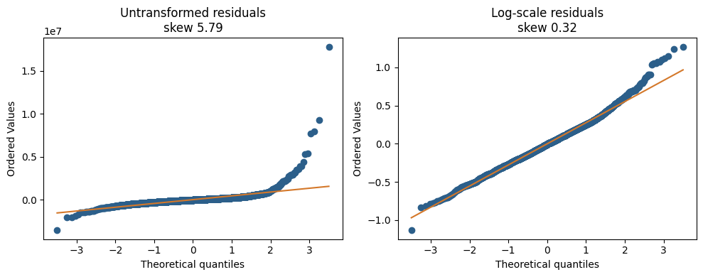

import os
import sys
if os.path.basename(os.getcwd()) == "notebooks":
os.chdir("..")
sys.path.insert(0, os.getcwd())
import numpy as np
import pandas as pd
import matplotlib.pyplot as plt
import statsmodels.api as sm
from scipy import stats
from sklearn.ensemble import RandomForestRegressor
from sklearn.model_selection import ParameterGrid
from xgboost import XGBRegressor
import data
from features import square_feet
scores = []
def percentage_scores(predicted, sold):
signed = 100 * (np.asarray(predicted) - np.asarray(sold)) / np.asarray(sold)
absolute = np.abs(signed)
return {
"MdAPE": round(float(np.median(absolute)), 2),
"MAPE": round(float(np.mean(absolute)), 2),
"median_signed_error": round(float(np.median(signed)), 2),
}
def add_score(name, predicted, sold):
row = {"model": name, **percentage_scores(predicted, sold)}
scores.append(row)
print(
f"{name}: MdAPE {row['MdAPE']:.2f}%, "
f"MAPE {row['MAPE']:.2f}%, "
f"median signed error {row['median_signed_error']:+.2f}%"
)
return rowOff Market Models
Data Split
listings = data.load("listings").copy()
listings["square_feet"] = square_feet(listings["house_area"])
holdout_start = pd.Timestamp("2025-12-01")
train = listings[listings["date_sold"] < holdout_start].copy()
valid = listings[listings["date_sold"] >= holdout_start].copy()
print(f"Train: {len(train):,} sales, {train['date_sold'].min():%Y-%m-%d} to {train['date_sold'].max():%Y-%m-%d}")
print(f"Validation: {len(valid):,} sales, {valid['date_sold'].min():%Y-%m-%d} to {valid['date_sold'].max():%Y-%m-%d}")Warning: You are sending unauthenticated requests to the HF Hub. Please set a HF_TOKEN to enable higher rate limits and faster downloads.Train: 139,931 sales, 2021-01-01 to 2025-11-30
Validation: 10,069 sales, 2025-12-01 to 2026-05-31Numerical features
def numeric_design(frame):
missing_lot = frame["lot_front"].isna()
X = pd.DataFrame(index=frame.index)
X["log_square_feet"] = np.log(frame["square_feet"])
X["lot_missing"] = missing_lot.astype(float)
X["log_lot_front"] = np.log(frame["lot_front"].where(~missing_lot, 1.0))
X["lot_depth"] = frame["lot_depth"].fillna(0.0)
for column in ["bedrooms", "washrooms", "parking_total", "garage", "latitude", "longitude"]:
X[column] = frame[column].astype(float)
return X
train_X = sm.add_constant(numeric_design(train),has_constant="add")
valid_X = sm.add_constant(numeric_design(valid), has_constant="add")
train_X.head()| const | log_square_feet | lot_missing | log_lot_front | lot_depth | bedrooms | washrooms | parking_total | garage | latitude | longitude | |
|---|---|---|---|---|---|---|---|---|---|---|---|
| 0 | 1.0 | 6.432940 | 1.0 | 0.0 | 0.0 | 1.0 | 1.0 | 0.0 | 0.0 | 43.602039 | -79.261184 |
| 1 | 1.0 | 6.475433 | 1.0 | 0.0 | 0.0 | 2.0 | 1.0 | 0.0 | 0.0 | 43.695388 | -79.510865 |
| 2 | 1.0 | 6.907255 | 1.0 | 0.0 | 0.0 | 2.0 | 1.0 | 1.0 | 0.0 | 43.740512 | -79.386216 |
| 3 | 1.0 | 6.775366 | 1.0 | 0.0 | 0.0 | 1.0 | 1.0 | 1.0 | 0.0 | 43.643774 | -79.470180 |
| 4 | 1.0 | 6.242223 | 1.0 | 0.0 | 0.0 | 1.0 | 1.0 | 1.0 | 0.0 | 43.696172 | -79.274137 |
OLS
raw_columns = [
"square_feet", "lot_front", "lot_depth",
"bedrooms", "washrooms", "parking_total","garage", "latitude", "longitude"
]
def raw_design(frame):
X = frame[raw_columns].copy()
X["lot_front"] = X["lot_front"].fillna(0.0)
X["lot_depth"] = X["lot_depth"].fillna(0.0)
return sm.add_constant(X, has_constant="add")
raw_model = sm.OLS(train["sold_price"], raw_design(train)).fit()
raw_hat = raw_model.predict(raw_design(valid))
add_score("OLS, regular", raw_hat, valid["sold_price"])OLS, regular: MdAPE 21.76%, MAPE 29.54%, median signed error +14.16%{'model': 'OLS, regular',
'MdAPE': 21.76,
'MAPE': 29.54,
'median_signed_error': 14.16}Log OLS
log_target = pd.Series(np.log(train["sold_price"]), index=train.index, name="log_sold_price")
log_model = sm.OLS(log_target, train_X).fit()
log_hat = np.exp(log_model.predict(valid_X))
add_score("OLS, log transformed", log_hat, valid["sold_price"])OLS, log transformed: MdAPE 20.26%, MAPE 27.14%, median signed error +11.88%{'model': 'OLS, log transformed',
'MdAPE': 20.26,
'MAPE': 27.14,
'median_signed_error': 11.88}Comparing OLS models
print(f"Residual skew, regular: {raw_model.resid.skew():.2f}")
print(f"Residual skew, log scale: {pd.Series(log_model.resid).skew():.2f}")
print("Regular regression:")
display(raw_model.summary())
print("Log-transformed regression:")
display(log_model.summary())
rng = np.random.default_rng(0)
fig, axes = plt.subplots(1, 2, figsize=(10, 4))
panels = [
(raw_model.resid, f"Untransformed residuals\nskew {raw_model.resid.skew():.2f}"),
(log_model.resid, f"Log-scale residuals\nskew {pd.Series(log_model.resid).skew():.2f}")
]
for ax, (resid, title) in zip(axes, panels):
sample = rng.choice(np.asarray(resid), size=min(3000, len(resid)), replace=False)
stats.probplot(sample, dist="norm", plot=ax)
ax.set_title(title)
ax.get_lines()[0].set_color("#2c5f8a")
ax.get_lines()[1].set_color("#d4782a")
fig.tight_layout()
plt.show()Residual skew, regular: 5.79
Residual skew, log scale: 0.32
Regular regression:| Dep. Variable: | sold_price | R-squared: | 0.625 |
|---|---|---|---|
| Model: | OLS | Adj. R-squared: | 0.625 |
| Method: | Least Squares | F-statistic: | 2.592e+04 |
| Date: | Sun, 01 Nov 2026 | Prob (F-statistic): | 0.00 |
| Time: | 21:01:26 | Log-Likelihood: | -2.0337e+06 |
| No. Observations: | 139931 | AIC: | 4.067e+06 |
| Df Residuals: | 139921 | BIC: | 4.068e+06 |
| Df Model: | 9 | ||
| Covariance Type: | nonrobust |
| coef | std err | t | P>|t| | [0.025 | 0.975] | |
|---|---|---|---|---|---|---|
| const | -3.822e+06 | 1.58e+06 | -2.418 | 0.016 | -6.92e+06 | -7.25e+05 |
| square_feet | 577.9961 | 2.649 | 218.161 | 0.000 | 572.803 | 583.189 |
| lot_front | 2376.8019 | 130.378 | 18.230 | 0.000 | 2121.263 | 2632.341 |
| lot_depth | 1979.3042 | 44.060 | 44.923 | 0.000 | 1892.948 | 2065.660 |
| bedrooms | -9.954e+04 | 2063.399 | -48.238 | 0.000 | -1.04e+05 | -9.55e+04 |
| washrooms | 1.159e+05 | 2053.347 | 56.451 | 0.000 | 1.12e+05 | 1.2e+05 |
| parking_total | -9483.8259 | 1324.675 | -7.159 | 0.000 | -1.21e+04 | -6887.489 |
| garage | -1.734e+04 | 2889.927 | -5.999 | 0.000 | -2.3e+04 | -1.17e+04 |
| latitude | 2.845e+05 | 2.45e+04 | 11.588 | 0.000 | 2.36e+05 | 3.33e+05 |
| longitude | 1.063e+05 | 1.33e+04 | 8.016 | 0.000 | 8.03e+04 | 1.32e+05 |
| Omnibus: | 166266.586 | Durbin-Watson: | 1.973 |
|---|---|---|---|
| Prob(Omnibus): | 0.000 | Jarque-Bera (JB): | 85666586.935 |
| Skew: | 5.788 | Prob(JB): | 0.00 |
| Kurtosis: | 123.660 | Cond. No. | 1.96e+06 |
Notes:
[1] Standard Errors assume that the covariance matrix of the errors is correctly specified.
[2] The condition number is large, 1.96e+06. This might indicate that there are
strong multicollinearity or other numerical problems.
Log-transformed regression:| Dep. Variable: | log_sold_price | R-squared: | 0.713 |
|---|---|---|---|
| Model: | OLS | Adj. R-squared: | 0.713 |
| Method: | Least Squares | F-statistic: | 3.470e+04 |
| Date: | Sun, 01 Nov 2026 | Prob (F-statistic): | 0.00 |
| Time: | 21:01:26 | Log-Likelihood: | -20363. |
| No. Observations: | 139931 | AIC: | 4.075e+04 |
| Df Residuals: | 139920 | BIC: | 4.086e+04 |
| Df Model: | 10 | ||
| Covariance Type: | nonrobust |
| coef | std err | t | P>|t| | [0.025 | 0.975] | |
|---|---|---|---|---|---|---|
| const | 7.2639 | 0.892 | 8.140 | 0.000 | 5.515 | 9.013 |
| log_square_feet | 0.4960 | 0.003 | 157.470 | 0.000 | 0.490 | 0.502 |
| lot_missing | 0.0486 | 0.010 | 4.861 | 0.000 | 0.029 | 0.068 |
| log_lot_front | 0.0461 | 0.003 | 15.540 | 0.000 | 0.040 | 0.052 |
| lot_depth | 0.0018 | 4.03e-05 | 44.577 | 0.000 | 0.002 | 0.002 |
| bedrooms | -0.0519 | 0.001 | -40.615 | 0.000 | -0.054 | -0.049 |
| washrooms | 0.1178 | 0.001 | 101.437 | 0.000 | 0.116 | 0.120 |
| parking_total | -0.0092 | 0.001 | -11.790 | 0.000 | -0.011 | -0.008 |
| garage | 0.0026 | 0.002 | 1.584 | 0.113 | -0.001 | 0.006 |
| latitude | 0.2477 | 0.014 | 17.888 | 0.000 | 0.221 | 0.275 |
| longitude | 0.1028 | 0.007 | 13.735 | 0.000 | 0.088 | 0.117 |
| Omnibus: | 5400.907 | Durbin-Watson: | 1.936 |
|---|---|---|---|
| Prob(Omnibus): | 0.000 | Jarque-Bera (JB): | 9507.853 |
| Skew: | 0.323 | Prob(JB): | 0.00 |
| Kurtosis: | 4.102 | Cond. No. | 1.30e+05 |
Notes:
[1] Standard Errors assume that the covariance matrix of the errors is correctly specified.
[2] The condition number is large, 1.3e+05. This might indicate that there are
strong multicollinearity or other numerical problems.

Feature Engineering
def tree_frame(frame):
X = numeric_design(frame)
listed_month = frame["date_listed"].dt.month.to_numpy()
X["listed_month_sin"] = np.sin(2 * np.pi * listed_month / 12)
X["listed_month_cos"] = np.cos(2 * np.pi * listed_month / 12)
return X
tree_train = tree_frame(train)
tree_valid = tree_frame(valid)
log_sold = np.log(train["sold_price"].to_numpy())tune_start = pd.Timestamp("2025-07-01")
fit_mask = (train["date_sold"] < tune_start).to_numpy()
X_fit = tree_train.iloc[fit_mask]
y_fit = np.log(train["sold_price"].to_numpy()[fit_mask])
X_tune = tree_train.iloc[~fit_mask]
sold_tune = train["sold_price"].to_numpy()[~fit_mask]
print(
f"Parameter search: fit {fit_mask.sum():,} sales through June 2025, "
f"score {(~fit_mask).sum():,} sales from July through November 2025"
)
def inner_mdape(model):
model.fit(X_fit, y_fit)
predicted = np.exp(model.predict(X_tune))
error = np.abs(predicted - sold_tune) / sold_tune
return round(float(np.median(error) * 100), 3)
def validation_score(name, model):
model.fit(tree_train, log_sold)
predicted = np.exp(model.predict(tree_valid))
return add_score(name, predicted, valid["sold_price"])Parameter search: fit 130,045 sales through June 2025, score 9,886 sales from July through November 2025XGBoost
xgb_candidates = list(ParameterGrid(
{
"max_depth": [4, 6, 8],
"learning_rate": [0.05, 0.1],
"n_estimators": [200, 400],
}
))
xgb_candidates.extend([
{
"max_depth": 8,
"learning_rate": 0.05,
"n_estimators": 600,
},
{
"max_depth": 8,
"learning_rate": 0.03,
"n_estimators": 600,
},
{
"max_depth": 10,
"learning_rate": 0.05,
"n_estimators": 400,
},
{
"max_depth": 10,
"learning_rate": 0.05,
"n_estimators": 600,
},
])
xgb_rows = []
for params in xgb_candidates:
score = inner_mdape(
XGBRegressor(
**params,
min_child_weight=20,
subsample=0.8,
colsample_bytree=0.8,
reg_lambda=1.0,
tree_method="hist",
n_jobs=-1,
random_state=0,
verbosity=0,
)
)
xgb_rows.append({**params, "inner_MdAPE": score})
xgb_table = pd.DataFrame(xgb_rows).sort_values(
["inner_MdAPE", "n_estimators", "max_depth", "learning_rate"]
).reset_index(drop=True)
display(xgb_table)
best_xgb = xgb_table.iloc[0]
validation_score(
f"XGBoost, depth {int(best_xgb.max_depth)}, lr {best_xgb.learning_rate:g}, {int(best_xgb.n_estimators)} trees",
XGBRegressor(
n_estimators=int(best_xgb.n_estimators),
max_depth=int(best_xgb.max_depth),
learning_rate=float(best_xgb.learning_rate),
min_child_weight=20,
subsample=0.8,
colsample_bytree=0.8,
reg_lambda=1.0,
tree_method="hist",
n_jobs=-1,
random_state=0,
verbosity=0,
),
)| learning_rate | max_depth | n_estimators | inner_MdAPE | |
|---|---|---|---|---|
| 0 | 0.05 | 10 | 600 | 15.470 |
| 1 | 0.05 | 10 | 400 | 15.633 |
| 2 | 0.10 | 8 | 400 | 15.725 |
| 3 | 0.05 | 8 | 600 | 15.873 |
| 4 | 0.05 | 8 | 400 | 16.275 |
| 5 | 0.03 | 8 | 600 | 16.279 |
| 6 | 0.10 | 6 | 400 | 16.355 |
| 7 | 0.10 | 8 | 200 | 16.369 |
| 8 | 0.10 | 6 | 200 | 16.969 |
| 9 | 0.05 | 8 | 200 | 17.000 |
| 10 | 0.05 | 6 | 400 | 17.046 |
| 11 | 0.10 | 4 | 400 | 17.311 |
| 12 | 0.05 | 6 | 200 | 18.079 |
| 13 | 0.10 | 4 | 200 | 18.150 |
| 14 | 0.05 | 4 | 400 | 18.156 |
| 15 | 0.05 | 4 | 200 | 19.123 |
XGBoost, depth 10, lr 0.05, 600 trees: MdAPE 17.28%, MAPE 21.17%, median signed error +14.00%{'model': 'XGBoost, depth 10, lr 0.05, 600 trees',
'MdAPE': 17.28,
'MAPE': 21.17,
'median_signed_error': 14.0}CatBoost
from catboost import CatBoostRegressor
cat_candidates = list(ParameterGrid(
{
"depth": [6, 8],
"learning_rate": [0.05, 0.1],
"l2_leaf_reg": [3, 10],
}
))
cat_candidates.extend([
{
"depth": 6,
"learning_rate": 0.15,
"l2_leaf_reg": 3,
},
{
"depth": 6,
"learning_rate": 0.15,
"l2_leaf_reg": 1,
},
])
cat_rows = []
for params in cat_candidates:
score = inner_mdape(
CatBoostRegressor(
**params,
iterations=300,
loss_function="RMSE",
random_seed=0,
verbose=0,
allow_writing_files=False,
thread_count=-1,
)
)
cat_rows.append({**params, "inner_MdAPE": score})
cat_table = pd.DataFrame(cat_rows).sort_values(
["inner_MdAPE", "depth", "l2_leaf_reg", "learning_rate"]
).reset_index(drop=True)
display(cat_table)
best_cat = cat_table.iloc[0]
validation_score(
f"CatBoost, depth {int(best_cat.depth)}, lr {best_cat.learning_rate:g}, l2 {best_cat.l2_leaf_reg:g}",
CatBoostRegressor(
depth=int(best_cat.depth),
learning_rate=float(best_cat.learning_rate),
l2_leaf_reg=float(best_cat.l2_leaf_reg),
iterations=300,
loss_function="RMSE",
random_seed=0,
verbose=0,
allow_writing_files=False,
thread_count=-1,
),
)CatBoost, depth 8, lr 0.1, l2 3: MdAPE 18.61%, MAPE 23.31%, median signed error +13.66%| depth | l2_leaf_reg | learning_rate | inner_MdAPE | |
|---|---|---|---|---|
| 0 | 8 | 3 | 0.10 | 17.038 |
| 1 | 8 | 10 | 0.10 | 17.132 |
| 2 | 6 | 3 | 0.15 | 17.161 |
| 3 | 6 | 1 | 0.15 | 17.307 |
| 4 | 6 | 10 | 0.10 | 17.654 |
| 5 | 6 | 3 | 0.10 | 17.720 |
| 6 | 8 | 3 | 0.05 | 17.892 |
| 7 | 8 | 10 | 0.05 | 17.941 |
| 8 | 6 | 10 | 0.05 | 18.322 |
| 9 | 6 | 3 | 0.05 | 18.347 |
Random Forest
rf_rows = []
for params in ParameterGrid(
{
"max_depth": [12, 20, 32],
"min_samples_leaf": [5, 20],
}
):
score = inner_mdape(
RandomForestRegressor(
**params,
n_estimators=200,
max_features=0.5,
n_jobs=-1,
random_state=0,
)
)
rf_rows.append({**params, "inner_MdAPE": score})
rf_table = pd.DataFrame(rf_rows).sort_values(
["inner_MdAPE", "max_depth", "min_samples_leaf"],
ascending=[True, True, False],
).reset_index(drop=True)
display(rf_table)
best_rf = rf_table.iloc[0]
validation_score(
f"Random Forest, depth {int(best_rf.max_depth)}, leaf {int(best_rf.min_samples_leaf)}",
RandomForestRegressor(
n_estimators=200,
max_depth=int(best_rf.max_depth),
min_samples_leaf=int(best_rf.min_samples_leaf),
max_features=0.5,
n_jobs=-1,
random_state=0,
),
)| max_depth | min_samples_leaf | inner_MdAPE | |
|---|---|---|---|
| 0 | 32 | 5 | 17.442 |
| 1 | 20 | 5 | 17.605 |
| 2 | 32 | 20 | 18.387 |
| 3 | 20 | 20 | 18.444 |
| 4 | 12 | 5 | 19.118 |
| 5 | 12 | 20 | 19.207 |
Random Forest, depth 32, leaf 5: MdAPE 18.95%, MAPE 23.63%, median signed error +13.93%{'model': 'Random Forest, depth 32, leaf 5',
'MdAPE': 18.95,
'MAPE': 23.63,
'median_signed_error': 13.93}V1: Recent community dollars per square foot
Square feet times the median sold dollars per square foot of earlier sales in the same community and house type. Only sales from a recent window of months before the listing month are used. Fewer than 30 sales falls back to the house type, then to the city. The window is chosen on sales from July through November 2025. December 2025 through May 2026 is scored once, with the price levels taken from sales before December.
def month_ord(dates):
return (dates.dt.year * 12 + dates.dt.month).to_numpy()
def recent_psf_table(reference, group_columns, window):
history = reference.loc[:, group_columns].copy()
history["month_ord"] = month_ord(reference["date_sold"])
history["value"] = (reference["sold_price"] / reference["square_feet"]).to_numpy(dtype=float)
history = history.replace([np.inf, -np.inf], np.nan).dropna()
last_month = int(history["month_ord"].max())
query_ords = np.arange(int(history["month_ord"].min()) - 24, last_month + 18)
pieces = []
for key, group in history.groupby(group_columns, observed=True, sort=False):
group = group.sort_values("month_ord")
sale_ords = group["month_ord"].to_numpy()
values = group["value"].to_numpy()
medians = np.full(len(query_ords), np.nan)
counts = np.zeros(len(query_ords), dtype=float)
for i, query in enumerate(query_ords):
end = int(np.searchsorted(sale_ords, query, side="left"))
if end == 0:
continue
start = int(np.searchsorted(sale_ords, query - window, side="left"))
if start >= end:
last = int(sale_ords[end - 1])
start = int(np.searchsorted(sale_ords, last - window + 1, side="left"))
medians[i] = float(np.median(values[start:end]))
counts[i] = end - start
key = key if isinstance(key, tuple) else (key,)
piece = {"month_ord": query_ords, "median": medians, "count": counts}
for column, value in zip(group_columns, key):
piece[column] = value
pieces.append(pd.DataFrame(piece))
return pd.concat(pieces, ignore_index=True)
def lookup_past(query, table, group_columns):
keys = query.loc[:, list(group_columns)].copy()
keys["month_ord"] = month_ord(query["date_listed"])
merged = keys.merge(table, on=list(group_columns) + ["month_ord"], how="left")
if len(merged) != len(query):
raise ValueError("past-median lookup changed the number of rows")
median = merged["median"].to_numpy(dtype=float)
count = merged["count"].fillna(0).to_numpy(dtype=float)
return median, count
def psf_bundle(reference, window):
usable = reference[(reference["sold_price"] > 0) & (reference["square_feet"] > 0)].copy()
usable["_all"] = "all"
return {
"frame": usable,
"fallback": float(np.median(usable["sold_price"] / usable["square_feet"])),
"community": recent_psf_table(usable, ["community", "house_type_name"], window),
"type": recent_psf_table(usable, ["house_type_name"], window),
"city": recent_psf_table(usable, ["_all"], window),
}
def price_level(frame, bundle):
query = frame.copy()
query["_all"] = "all"
community_median, community_count = lookup_past(query, bundle["community"], ["community", "house_type_name"])
type_median, type_count = lookup_past(query, bundle["type"], ["house_type_name"])
city_median, city_count = lookup_past(query, bundle["city"], ["_all"])
level = np.where(community_count >= 30, community_median, np.where(type_count >= 30, type_median, city_median))
level = np.where(np.isfinite(level) & (level > 0), level, bundle["fallback"])
return level, community_count >= 30
def anchor_price(frame, bundle):
level, community_hit = price_level(frame, bundle)
return level * frame["square_feet"].to_numpy(dtype=float), community_hit
screen = train[train["date_sold"] >= "2025-07-01"]
window_rows = []
for window, label in [(3, "3 months"), (6, "6 months"), (12, "12 months"), (24, "24 months"), (240, "all history")]:
print(f"screening {label}", flush=True)
bundle = psf_bundle(train, window)
predicted, community_hit = anchor_price(screen, bundle)
row = {
"window": label,
"months": window,
"community_share": round(100 * float(community_hit.mean()), 1),
**percentage_scores(predicted, screen["sold_price"]),
}
window_rows.append(row)
print(
f"{label}: MdAPE {row['MdAPE']:.2f}, MAPE {row['MAPE']:.2f}, "
f"signed {row['median_signed_error']:+.2f}, community {row['community_share']:.1f}%",
flush=True,
)
window_table = pd.DataFrame(window_rows).sort_values(["MdAPE", "MAPE"]).reset_index(drop=True)
display(window_table)
chosen_window = int(window_table.iloc[0]["months"])
chosen_label = window_table.iloc[0]["window"]
print(f"Chosen window: {chosen_label}")
v1_bundle = psf_bundle(train, chosen_window)
v1_hat, v1_community = anchor_price(valid, v1_bundle)
print(
f"Validation community level: {100 * float(v1_community.mean()):.1f}% of homes. "
f"Type or city fallback: {100 * float((~v1_community).mean()):.1f}%."
)
add_score(f"V1 recent community $/sqft, {chosen_label}", v1_hat, valid["sold_price"])
if chosen_window != 240:
history_bundle = psf_bundle(train, 240)
history_hat, _ = anchor_price(valid, history_bundle)
add_score("V1 check, all-history community $/sqft", history_hat, valid["sold_price"])
all_history_score = next(
row["MdAPE"] for row in scores if "all history" in row["model"] or "all-history" in row["model"]
)
if abs(all_history_score - 17.07) > 0.8:
raise RuntimeError(f"all-history MdAPE {all_history_score} is far from the EDA baseline 17.07")screening 3 months
3 months: MdAPE 17.21, MAPE 24.19, signed +4.30, community 35.0%
screening 6 months
6 months: MdAPE 16.19, MAPE 22.78, signed +6.54, community 61.0%
screening 12 months
12 months: MdAPE 15.33, MAPE 21.46, signed +6.95, community 79.9%
screening 24 months
24 months: MdAPE 15.70, MAPE 21.64, signed +9.18, community 89.8%
screening all history
all history: MdAPE 16.42, MAPE 22.44, signed +11.97, community 96.9%| window | months | community_share | MdAPE | MAPE | median_signed_error | |
|---|---|---|---|---|---|---|
| 0 | 12 months | 12 | 79.9 | 15.33 | 21.46 | 6.95 |
| 1 | 24 months | 24 | 89.8 | 15.70 | 21.64 | 9.18 |
| 2 | 6 months | 6 | 61.0 | 16.19 | 22.78 | 6.54 |
| 3 | all history | 240 | 96.9 | 16.42 | 22.44 | 11.97 |
| 4 | 3 months | 3 | 35.0 | 17.21 | 24.19 | 4.30 |
Chosen window: 12 months
Validation community level: 76.5% of homes. Type or city fallback: 23.5%.
V1 recent community $/sqft, 12 months: MdAPE 15.60%, MAPE 20.80%, median signed error +3.71%
V1 check, all-history community $/sqft: MdAPE 17.07%, MAPE 22.23%, median signed error +10.84%V2: Level shift on the recent price
V1’s all-history price sits above the 2025 market. The shift is the median log miss of the chosen V1 window on September through November 2025, using price levels built only from sales before September. The December 2025 through May 2026 prediction uses price levels from all sales before December, multiplied by exp(−shift).
early = train[train["date_sold"] < "2025-09-01"]
recent_check = train[train["date_sold"] >= "2025-09-01"]
early_bundle = psf_bundle(early, chosen_window)
recent_anchor, _ = anchor_price(recent_check, early_bundle)
v2_shift = float(np.median(np.log(recent_anchor) - np.log(recent_check["sold_price"].to_numpy())))
print(f"September-November shift: predictions high by {100 * (np.exp(v2_shift) - 1):+.2f}%")
v2_hat = v1_hat * np.exp(-v2_shift)
add_score(f"V2 V1 with level shift, {chosen_label}", v2_hat, valid["sold_price"])September-November shift: predictions high by +7.15%
V2 V1 with level shift, 12 months: MdAPE 15.22%, MAPE 19.40%, median signed error -3.22%V3: LightGBM on the gap around V1
The target is log(sold price / V1 anchor). The features are the numeric size, lot, and coordinate fields, the listing-month sine and cosine, the log of the recent community price and of the 3-month and 12-month citywide prices, plus house type, style, community, and municipality as categories. Category levels and price tables come from sales before December 2025. The trees use the list-aware settings: 127 leaves, learning rate 0.03, 700 trees.
from lightgbm import LGBMRegressor
GAP_CATEGORIES = ["house_type_name", "house_style", "community", "municipality"]
PHRASE_PATTERNS = [
("as_is", r"as-is|as is"),
("turnkey", r"turnkey"),
("potential", r"potential"),
("original", r"original"),
("finished", r"finished"),
("renovated", r"renovat"),
("needs_work", r"needs work"),
("stunning", r"stunning|beautiful|gorgeous|spectacular"),
]
gap_lgb = dict(
num_leaves=127,
learning_rate=0.03,
n_estimators=700,
min_child_samples=20,
subsample=0.8,
subsample_freq=1,
colsample_bytree=0.8,
reg_lambda=1.0,
random_state=0,
n_jobs=-1,
verbosity=-1,
)
def city_bundle(reference, window):
usable = reference[(reference["sold_price"] > 0) & (reference["square_feet"] > 0)].copy()
usable["_all"] = "all"
return {
"frame": usable,
"fallback": float(np.median(usable["sold_price"] / usable["square_feet"])),
"city": recent_psf_table(usable, ["_all"], window),
}
def city_level(frame, bundle):
query = frame.copy()
query["_all"] = "all"
median, count = lookup_past(query, bundle["city"], ["_all"])
return np.where(np.isfinite(median) & (median > 0), median, bundle["fallback"])
def phrase_frame(frame):
text = frame["remarks"].fillna("").str.lower()
columns = pd.DataFrame(index=frame.index)
for name, pattern in PHRASE_PATTERNS:
columns[name] = text.str.contains(pattern, regex=True).astype(float).to_numpy()
return columns
def gap_design(frame, anchor_bundle, city3, city12, levels, use_phrases):
level, _ = price_level(frame, anchor_bundle)
X = tree_frame(frame)
X["log_community_psf"] = np.log(level)
X["log_city_psf_3"] = np.log(city_level(frame, city3))
X["log_city_psf_12"] = np.log(city_level(frame, city12))
for column in GAP_CATEGORIES:
X[column] = pd.Categorical(frame[column].to_numpy(), categories=levels[column])
if use_phrases:
phrases = phrase_frame(frame)
for column in phrases.columns:
X[column] = phrases[column].to_numpy()
anchor = level * frame["square_feet"].to_numpy(dtype=float)
return X, anchor
def category_levels(reference):
return {column: pd.Index(reference[column].dropna().unique()) for column in GAP_CATEGORIES}
def fit_gap(fit_frame, reference, window, use_phrases):
anchor_bundle = psf_bundle(reference, window)
city3 = city_bundle(reference, 3)
city12 = city_bundle(reference, 12)
levels = category_levels(reference)
X, anchor = gap_design(fit_frame, anchor_bundle, city3, city12, levels, use_phrases)
model = LGBMRegressor(**gap_lgb)
model.fit(X, np.log(fit_frame["sold_price"].to_numpy() / anchor), categorical_feature=GAP_CATEGORIES)
return model, anchor_bundle, city3, city12, levels
def predict_gap(model, frame, anchor_bundle, city3, city12, levels, use_phrases):
X, anchor = gap_design(frame, anchor_bundle, city3, city12, levels, use_phrases)
return anchor * np.exp(model.predict(X))
print("Fitting V3", flush=True)
v3_model, v3_bundle, v3_city3, v3_city12, v3_levels = fit_gap(train, train, chosen_window, False)
v3_hat = predict_gap(v3_model, valid, v3_bundle, v3_city3, v3_city12, v3_levels, False)
add_score(f"V3 LightGBM on the V1 gap, {chosen_label}", v3_hat, valid["sold_price"])Fitting V3
V3 LightGBM on the V1 gap, 12 months: MdAPE 9.40%, MAPE 12.13%, median signed error +1.03%V4: Level shift on V3
The shift is the median log miss of a V3 model fit only on sales before September 2025, scored on September through November 2025. Price levels for that fit come from the sales before September. The model is then refit on all sales before December and the same shift is applied.
print("Fitting V4 shift model", flush=True)
v4_early_model, v4_early_bundle, v4_early_city3, v4_early_city12, v4_early_levels = fit_gap(
early, early, chosen_window, False
)
v4_recent_hat = predict_gap(
v4_early_model, recent_check, v4_early_bundle, v4_early_city3, v4_early_city12, v4_early_levels, False
)
v4_shift = float(np.median(np.log(v4_recent_hat) - np.log(recent_check["sold_price"].to_numpy())))
print(f"September-November shift: predictions high by {100 * (np.exp(v4_shift) - 1):+.2f}%")
print("Refitting V4", flush=True)
v4_model, v4_bundle, v4_city3, v4_city12, v4_levels = fit_gap(train, train, chosen_window, False)
v4_hat = predict_gap(v4_model, valid, v4_bundle, v4_city3, v4_city12, v4_levels, False) * np.exp(-v4_shift)
add_score(f"V4 V3 with level shift, {chosen_label}", v4_hat, valid["sold_price"])Fitting V4 shift model
September-November shift: predictions high by +2.34%
Refitting V4
V4 V3 with level shift, 12 months: MdAPE 9.23%, MAPE 11.88%, median signed error -1.28%V5: Condition phrases
V4’s features plus indicators read from the remarks: as-is, turnkey, potential, original, finished, renovated, needs work, and stunning or beautiful. The level shift is measured again for this feature set, on September through November 2025, from a model fit only before September.
print("Fitting V5 shift model", flush=True)
v5_early_model, v5_early_bundle, v5_early_city3, v5_early_city12, v5_early_levels = fit_gap(
early, early, chosen_window, True
)
v5_recent_hat = predict_gap(
v5_early_model, recent_check, v5_early_bundle, v5_early_city3, v5_early_city12, v5_early_levels, True
)
v5_shift = float(np.median(np.log(v5_recent_hat) - np.log(recent_check["sold_price"].to_numpy())))
print(f"September-November shift: predictions high by {100 * (np.exp(v5_shift) - 1):+.2f}%")
print("Refitting V5", flush=True)
v5_model, v5_bundle, v5_city3, v5_city12, v5_levels = fit_gap(train, train, chosen_window, True)
v5_hat = predict_gap(v5_model, valid, v5_bundle, v5_city3, v5_city12, v5_levels, True) * np.exp(-v5_shift)
add_score(f"V5 condition phrases with level shift, {chosen_label}", v5_hat, valid["sold_price"])Fitting V5 shift model
September-November shift: predictions high by +2.43%
Refitting V5
V5 condition phrases with level shift, 12 months: MdAPE 8.97%, MAPE 11.19%, median signed error -1.33%V6: Blended community price and a partial level shift
V5 jumps from the community median to the type median at 30 sales, and it applies the whole three-month level shift. Here the community median is blended with the type median, with the community’s weight equal to its sale count divided by that count plus a strength. The shift is multiplied by a weight between 0 and 1. The strength, the shift weight, and a recheck of the 6-, 12-, and 24-month windows are chosen on July through November 2025. Extra remark flags are kept only if they lower that same error. December 2025 through May 2026 is scored once.
def v6_level(frame, bundle, strength):
if strength is None:
level, _ = price_level(frame, bundle)
return level
query = frame.copy()
query["_all"] = "all"
community_median, community_count = lookup_past(query, bundle["community"], ["community", "house_type_name"])
type_median, type_count = lookup_past(query, bundle["type"], ["house_type_name"])
city_median, city_count = lookup_past(query, bundle["city"], ["_all"])
type_level = np.where(type_count >= 30, type_median, city_median)
community_ok = np.isfinite(community_median) & (community_median > 0) & (community_count > 0)
denom = community_count + strength
ratio = np.divide(
community_count,
denom,
out=np.zeros(len(community_count), dtype=float),
where=denom > 0,
)
weight = np.where(community_ok, ratio, 0.0)
blended = weight * np.where(community_ok, community_median, type_level) + (1.0 - weight) * type_level
return np.where(np.isfinite(blended) & (blended > 0), blended, bundle["fallback"])
def v6_design(frame, anchor_bundle, city3, city12, levels, phrases, strength):
level = v6_level(frame, anchor_bundle, strength)
X = tree_frame(frame)
X["log_community_psf"] = np.log(level)
X["log_city_psf_3"] = np.log(city_level(frame, city3))
X["log_city_psf_12"] = np.log(city_level(frame, city12))
for column in GAP_CATEGORIES:
X[column] = pd.Categorical(frame[column].to_numpy(), categories=levels[column])
text = frame["remarks"].fillna("").str.lower()
for name, pattern in phrases:
X[name] = text.str.contains(pattern, regex=True).astype(float).to_numpy()
anchor = level * frame["square_feet"].to_numpy(dtype=float)
return X, anchor
def v6_fit(fit_frame, anchor_bundle, city3, city12, levels, phrases, strength):
X, anchor = v6_design(fit_frame, anchor_bundle, city3, city12, levels, phrases, strength)
model = LGBMRegressor(**gap_lgb)
model.fit(
X,
np.log(fit_frame["sold_price"].to_numpy() / anchor),
categorical_feature=GAP_CATEGORIES,
)
return model
def v6_predict(model, frame, anchor_bundle, city3, city12, levels, phrases, strength):
X, anchor = v6_design(frame, anchor_bundle, city3, city12, levels, phrases, strength)
return anchor * np.exp(model.predict(X))
def v6_prepare(reference, window):
return (
psf_bundle(reference, window),
city_bundle(reference, 3),
city_bundle(reference, 12),
category_levels(reference),
)
def v6_screen(window, strengths, phrases):
early_ref = train[train["date_sold"] < "2025-04-01"]
fit_ref = train[train["date_sold"] < "2025-07-01"]
shift_rows = train[(train["date_sold"] >= "2025-04-01") & (train["date_sold"] < "2025-07-01")]
score_rows = train[train["date_sold"] >= "2025-07-01"]
early_pack = v6_prepare(early_ref, window)
full_pack = v6_prepare(train, window)
rows = []
for strength_name, strength in strengths:
print(f"window {window}, {strength_name}: shift fit", flush=True)
shift_model = v6_fit(early_ref, *early_pack, phrases, strength)
shift_hat = v6_predict(shift_model, shift_rows, *early_pack, phrases, strength)
shift = float(np.median(np.log(shift_hat) - np.log(shift_rows["sold_price"].to_numpy())))
print(f"window {window}, {strength_name}: July fit", flush=True)
model = v6_fit(fit_ref, *full_pack, phrases, strength)
base_hat = v6_predict(model, score_rows, *full_pack, phrases, strength)
for weight in [0.0, 0.25, 0.5, 0.75, 1.0]:
hat = base_hat * np.exp(-weight * shift)
row = {
"window": window,
"strength": strength_name,
"shift_weight": weight,
"phrases": "extra" if len(phrases) > len(PHRASE_PATTERNS) else "base",
**percentage_scores(hat, score_rows["sold_price"]),
}
rows.append(row)
print(
f" weight {weight:g}: MdAPE {row['MdAPE']:.2f}, "
f"signed {row['median_signed_error']:+.2f}",
flush=True,
)
return pd.DataFrame(rows)
V6_STRENGTHS = [
("hard 30", None),
("blend 0", 0.0),
("blend 10", 10.0),
("blend 30", 30.0),
("blend 100", 100.0),
]
V6_EXTRA_PHRASES = PHRASE_PATTERNS + [
("investor", r"\binvestors?\b"),
("motivated", r"\bmotivated\b"),
("redone", r"\bredone\b|\bredo\b"),
("dated", r"\bdated\b"),
("worn", r"\bworn\b"),
]
print(f"July-November selection sales: {(train['date_sold'] >= '2025-07-01').sum():,}", flush=True)
v6_base_screen = pd.concat(
[v6_screen(window, V6_STRENGTHS, PHRASE_PATTERNS) for window in (12, 6, 24)],
ignore_index=True,
)
v6_base_screen = v6_base_screen.sort_values(["MdAPE", "MAPE", "shift_weight"]).reset_index(drop=True)
display(v6_base_screen)
v6_choice = v6_base_screen.iloc[0]
v6_window = int(v6_choice["window"])
v6_strength_name = v6_choice["strength"]
v6_strength = dict(V6_STRENGTHS)[v6_strength_name]
v6_weight = float(v6_choice["shift_weight"])
print(
f"Base choice: {v6_window} months, {v6_strength_name}, shift weight {v6_weight:g}, "
f"July-November MdAPE {v6_choice['MdAPE']:.2f}"
)
v6_extra_screen = v6_screen(v6_window, [(v6_strength_name, v6_strength)], V6_EXTRA_PHRASES)
v6_extra_screen = v6_extra_screen.sort_values(["MdAPE", "MAPE", "shift_weight"]).reset_index(drop=True)
display(v6_extra_screen)
v6_phrases = PHRASE_PATTERNS
v6_phrase_name = "base"
if v6_extra_screen.iloc[0]["MdAPE"] < v6_choice["MdAPE"]:
v6_phrases = V6_EXTRA_PHRASES
v6_phrase_name = "extra"
v6_weight = float(v6_extra_screen.iloc[0]["shift_weight"])
print(
f"Extra remarks kept. Shift weight {v6_weight:g}, "
f"July-November MdAPE {v6_extra_screen.iloc[0]['MdAPE']:.2f}"
)
else:
print(
f"Extra remarks left out. July-November MdAPE {v6_extra_screen.iloc[0]['MdAPE']:.2f} "
f"versus {v6_choice['MdAPE']:.2f} for the base phrases."
)
print("Fitting the December V6 model", flush=True)
v6_early = train[train["date_sold"] < "2025-09-01"]
v6_check = train[train["date_sold"] >= "2025-09-01"]
v6_early_pack = v6_prepare(v6_early, v6_window)
v6_shift_model = v6_fit(v6_early, *v6_early_pack, v6_phrases, v6_strength)
v6_check_hat = v6_predict(v6_shift_model, v6_check, *v6_early_pack, v6_phrases, v6_strength)
v6_shift = float(np.median(np.log(v6_check_hat) - np.log(v6_check["sold_price"].to_numpy())))
print(
f"September-November shift before the weight: predictions high by "
f"{100 * (np.exp(v6_shift) - 1):+.2f}%. Applied weight {v6_weight:g}."
)
v6_full_pack = v6_prepare(train, v6_window)
v6_model = v6_fit(train, *v6_full_pack, v6_phrases, v6_strength)
v6_hat = v6_predict(v6_model, valid, *v6_full_pack, v6_phrases, v6_strength) * np.exp(-v6_weight * v6_shift)
v6_window_label = {6: "6 months", 12: "12 months", 24: "24 months"}[v6_window]
v6_name = (
f"V6 {v6_strength_name}, shift weight {v6_weight:g}, {v6_window_label}"
+ (", extra remarks" if v6_phrase_name == "extra" else "")
)
add_score(v6_name, v6_hat, valid["sold_price"])July-November selection sales: 9,886
window 12, hard 30: shift fit
window 12, hard 30: July fit
weight 0: MdAPE 9.33, signed +5.27
weight 0.25: MdAPE 9.01, signed +4.49
weight 0.5: MdAPE 8.77, signed +3.73
weight 0.75: MdAPE 8.59, signed +2.96
weight 1: MdAPE 8.41, signed +2.21
window 12, blend 0: shift fit
window 12, blend 0: July fit
weight 0: MdAPE 9.52, signed +5.84
weight 0.25: MdAPE 9.19, signed +5.03
weight 0.5: MdAPE 8.95, signed +4.22
weight 0.75: MdAPE 8.74, signed +3.42
weight 1: MdAPE 8.51, signed +2.63
window 12, blend 10: shift fit
window 12, blend 10: July fit
weight 0: MdAPE 9.32, signed +5.39
weight 0.25: MdAPE 9.12, signed +4.66
weight 0.5: MdAPE 8.85, signed +3.94
weight 0.75: MdAPE 8.71, signed +3.22
weight 1: MdAPE 8.57, signed +2.50
window 12, blend 30: shift fit
window 12, blend 30: July fit
weight 0: MdAPE 9.34, signed +5.23
weight 0.25: MdAPE 9.10, signed +4.52
weight 0.5: MdAPE 8.89, signed +3.81
weight 0.75: MdAPE 8.72, signed +3.11
weight 1: MdAPE 8.66, signed +2.41
window 12, blend 100: shift fit
window 12, blend 100: July fit
weight 0: MdAPE 9.28, signed +5.30
weight 0.25: MdAPE 9.07, signed +4.64
weight 0.5: MdAPE 8.92, signed +3.97
weight 0.75: MdAPE 8.75, signed +3.32
weight 1: MdAPE 8.55, signed +2.66
window 6, hard 30: shift fit
window 6, hard 30: July fit
weight 0: MdAPE 9.28, signed +5.05
weight 0.25: MdAPE 8.99, signed +4.35
weight 0.5: MdAPE 8.77, signed +3.65
weight 0.75: MdAPE 8.65, signed +2.96
weight 1: MdAPE 8.60, signed +2.27
window 6, blend 0: shift fit
window 6, blend 0: July fit
weight 0: MdAPE 9.39, signed +5.51
weight 0.25: MdAPE 9.19, signed +4.91
weight 0.5: MdAPE 8.97, signed +4.30
weight 0.75: MdAPE 8.83, signed +3.70
weight 1: MdAPE 8.70, signed +3.11
window 6, blend 10: shift fit
window 6, blend 10: July fit
weight 0: MdAPE 9.14, signed +4.99
weight 0.25: MdAPE 8.96, signed +4.44
weight 0.5: MdAPE 8.78, signed +3.89
weight 0.75: MdAPE 8.64, signed +3.34
weight 1: MdAPE 8.56, signed +2.80
window 6, blend 30: shift fit
window 6, blend 30: July fit
weight 0: MdAPE 9.12, signed +4.75
weight 0.25: MdAPE 8.95, signed +4.25
weight 0.5: MdAPE 8.82, signed +3.75
weight 0.75: MdAPE 8.71, signed +3.26
weight 1: MdAPE 8.59, signed +2.77
window 6, blend 100: shift fit
window 6, blend 100: July fit
weight 0: MdAPE 9.11, signed +4.61
weight 0.25: MdAPE 9.01, signed +4.19
weight 0.5: MdAPE 8.89, signed +3.77
weight 0.75: MdAPE 8.78, signed +3.35
weight 1: MdAPE 8.71, signed +2.93
window 24, hard 30: shift fit
window 24, hard 30: July fit
weight 0: MdAPE 9.58, signed +6.03
weight 0.25: MdAPE 9.20, signed +5.12
weight 0.5: MdAPE 8.85, signed +4.21
weight 0.75: MdAPE 8.65, signed +3.32
weight 1: MdAPE 8.48, signed +2.43
window 24, blend 0: shift fit
window 24, blend 0: July fit
weight 0: MdAPE 9.82, signed +6.60
weight 0.25: MdAPE 9.40, signed +5.62
weight 0.5: MdAPE 9.04, signed +4.64
weight 0.75: MdAPE 8.73, signed +3.68
weight 1: MdAPE 8.57, signed +2.73
window 24, blend 10: shift fit
window 24, blend 10: July fit
weight 0: MdAPE 9.70, signed +6.38
weight 0.25: MdAPE 9.30, signed +5.38
weight 0.5: MdAPE 9.00, signed +4.40
weight 0.75: MdAPE 8.77, signed +3.42
weight 1: MdAPE 8.53, signed +2.46
window 24, blend 30: shift fit
window 24, blend 30: July fit
weight 0: MdAPE 9.72, signed +6.04
weight 0.25: MdAPE 9.30, signed +5.10
weight 0.5: MdAPE 9.00, signed +4.18
weight 0.75: MdAPE 8.80, signed +3.26
weight 1: MdAPE 8.64, signed +2.35
window 24, blend 100: shift fit
window 24, blend 100: July fit
weight 0: MdAPE 9.51, signed +5.79
weight 0.25: MdAPE 9.17, signed +4.88
weight 0.5: MdAPE 8.89, signed +3.98
weight 0.75: MdAPE 8.71, signed +3.10
weight 1: MdAPE 8.54, signed +2.21| window | strength | shift_weight | phrases | MdAPE | MAPE | median_signed_error | |
|---|---|---|---|---|---|---|---|
| 0 | 12 | hard 30 | 1.00 | base | 8.41 | 11.18 | 2.21 |
| 1 | 24 | hard 30 | 1.00 | base | 8.48 | 11.10 | 2.43 |
| 2 | 12 | blend 0 | 1.00 | base | 8.51 | 11.26 | 2.63 |
| 3 | 24 | blend 10 | 1.00 | base | 8.53 | 11.16 | 2.46 |
| 4 | 24 | blend 100 | 1.00 | base | 8.54 | 11.11 | 2.21 |
| 5 | 12 | blend 100 | 1.00 | base | 8.55 | 11.26 | 2.66 |
| 6 | 6 | blend 10 | 1.00 | base | 8.56 | 11.39 | 2.80 |
| 7 | 24 | blend 0 | 1.00 | base | 8.57 | 11.25 | 2.73 |
| 8 | 12 | blend 10 | 1.00 | base | 8.57 | 11.30 | 2.50 |
| 9 | 6 | blend 30 | 1.00 | base | 8.59 | 11.35 | 2.77 |
| 10 | 12 | hard 30 | 0.75 | base | 8.59 | 11.38 | 2.96 |
| 11 | 6 | hard 30 | 1.00 | base | 8.60 | 11.31 | 2.27 |
| 12 | 24 | blend 30 | 1.00 | base | 8.64 | 11.22 | 2.35 |
| 13 | 6 | blend 10 | 0.75 | base | 8.64 | 11.56 | 3.34 |
| 14 | 24 | hard 30 | 0.75 | base | 8.65 | 11.35 | 3.32 |
| 15 | 6 | hard 30 | 0.75 | base | 8.65 | 11.51 | 2.96 |
| 16 | 12 | blend 30 | 1.00 | base | 8.66 | 11.24 | 2.41 |
| 17 | 6 | blend 0 | 1.00 | base | 8.70 | 11.55 | 3.11 |
| 18 | 24 | blend 100 | 0.75 | base | 8.71 | 11.36 | 3.10 |
| 19 | 6 | blend 100 | 1.00 | base | 8.71 | 11.42 | 2.93 |
| 20 | 6 | blend 30 | 0.75 | base | 8.71 | 11.50 | 3.26 |
| 21 | 12 | blend 10 | 0.75 | base | 8.71 | 11.51 | 3.22 |
| 22 | 12 | blend 30 | 0.75 | base | 8.72 | 11.44 | 3.11 |
| 23 | 24 | blend 0 | 0.75 | base | 8.73 | 11.55 | 3.68 |
| 24 | 12 | blend 0 | 0.75 | base | 8.74 | 11.50 | 3.42 |
| 25 | 12 | blend 100 | 0.75 | base | 8.75 | 11.46 | 3.32 |
| 26 | 24 | blend 10 | 0.75 | base | 8.77 | 11.44 | 3.42 |
| 27 | 12 | hard 30 | 0.50 | base | 8.77 | 11.62 | 3.73 |
| 28 | 6 | hard 30 | 0.50 | base | 8.77 | 11.73 | 3.65 |
| 29 | 6 | blend 100 | 0.75 | base | 8.78 | 11.55 | 3.35 |
| 30 | 6 | blend 10 | 0.50 | base | 8.78 | 11.74 | 3.89 |
| 31 | 24 | blend 30 | 0.75 | base | 8.80 | 11.48 | 3.26 |
| 32 | 6 | blend 30 | 0.50 | base | 8.82 | 11.66 | 3.75 |
| 33 | 6 | blend 0 | 0.75 | base | 8.83 | 11.75 | 3.70 |
| 34 | 24 | hard 30 | 0.50 | base | 8.85 | 11.66 | 4.21 |
| 35 | 12 | blend 10 | 0.50 | base | 8.85 | 11.75 | 3.94 |
| 36 | 24 | blend 100 | 0.50 | base | 8.89 | 11.65 | 3.98 |
| 37 | 12 | blend 30 | 0.50 | base | 8.89 | 11.67 | 3.81 |
| 38 | 6 | blend 100 | 0.50 | base | 8.89 | 11.70 | 3.77 |
| 39 | 12 | blend 100 | 0.50 | base | 8.92 | 11.69 | 3.97 |
| 40 | 12 | blend 0 | 0.50 | base | 8.95 | 11.77 | 4.22 |
| 41 | 6 | blend 30 | 0.25 | base | 8.95 | 11.84 | 4.25 |
| 42 | 6 | blend 10 | 0.25 | base | 8.96 | 11.94 | 4.44 |
| 43 | 6 | blend 0 | 0.50 | base | 8.97 | 11.97 | 4.30 |
| 44 | 6 | hard 30 | 0.25 | base | 8.99 | 11.99 | 4.35 |
| 45 | 24 | blend 10 | 0.50 | base | 9.00 | 11.78 | 4.40 |
| 46 | 24 | blend 30 | 0.50 | base | 9.00 | 11.78 | 4.18 |
| 47 | 6 | blend 100 | 0.25 | base | 9.01 | 11.85 | 4.19 |
| 48 | 12 | hard 30 | 0.25 | base | 9.01 | 11.90 | 4.49 |
| 49 | 24 | blend 0 | 0.50 | base | 9.04 | 11.91 | 4.64 |
| 50 | 12 | blend 100 | 0.25 | base | 9.07 | 11.94 | 4.64 |
| 51 | 12 | blend 30 | 0.25 | base | 9.10 | 11.94 | 4.52 |
| 52 | 6 | blend 100 | 0.00 | base | 9.11 | 12.01 | 4.61 |
| 53 | 6 | blend 30 | 0.00 | base | 9.12 | 12.03 | 4.75 |
| 54 | 12 | blend 10 | 0.25 | base | 9.12 | 12.03 | 4.66 |
| 55 | 6 | blend 10 | 0.00 | base | 9.14 | 12.16 | 4.99 |
| 56 | 24 | blend 100 | 0.25 | base | 9.17 | 12.00 | 4.88 |
| 57 | 12 | blend 0 | 0.25 | base | 9.19 | 12.09 | 5.03 |
| 58 | 6 | blend 0 | 0.25 | base | 9.19 | 12.21 | 4.91 |
| 59 | 24 | hard 30 | 0.25 | base | 9.20 | 12.02 | 5.12 |
| 60 | 12 | blend 100 | 0.00 | base | 9.28 | 12.22 | 5.30 |
| 61 | 6 | hard 30 | 0.00 | base | 9.28 | 12.27 | 5.05 |
| 62 | 24 | blend 30 | 0.25 | base | 9.30 | 12.14 | 5.10 |
| 63 | 24 | blend 10 | 0.25 | base | 9.30 | 12.18 | 5.38 |
| 64 | 12 | blend 10 | 0.00 | base | 9.32 | 12.34 | 5.39 |
| 65 | 12 | hard 30 | 0.00 | base | 9.33 | 12.21 | 5.27 |
| 66 | 12 | blend 30 | 0.00 | base | 9.34 | 12.23 | 5.23 |
| 67 | 6 | blend 0 | 0.00 | base | 9.39 | 12.47 | 5.51 |
| 68 | 24 | blend 0 | 0.25 | base | 9.40 | 12.32 | 5.62 |
| 69 | 24 | blend 100 | 0.00 | base | 9.51 | 12.40 | 5.79 |
| 70 | 12 | blend 0 | 0.00 | base | 9.52 | 12.44 | 5.84 |
| 71 | 24 | hard 30 | 0.00 | base | 9.58 | 12.43 | 6.03 |
| 72 | 24 | blend 10 | 0.00 | base | 9.70 | 12.64 | 6.38 |
| 73 | 24 | blend 30 | 0.00 | base | 9.72 | 12.55 | 6.04 |
| 74 | 24 | blend 0 | 0.00 | base | 9.82 | 12.78 | 6.60 |
Base choice: 12 months, hard 30, shift weight 1, July-November MdAPE 8.41
window 12, hard 30: shift fit
window 12, hard 30: July fit
weight 0: MdAPE 9.16, signed +5.28
weight 0.25: MdAPE 8.88, signed +4.45
weight 0.5: MdAPE 8.68, signed +3.63
weight 0.75: MdAPE 8.50, signed +2.81
weight 1: MdAPE 8.33, signed +2.00| window | strength | shift_weight | phrases | MdAPE | MAPE | median_signed_error | |
|---|---|---|---|---|---|---|---|
| 0 | 12 | hard 30 | 1.00 | extra | 8.33 | 11.05 | 2.00 |
| 1 | 12 | hard 30 | 0.75 | extra | 8.50 | 11.27 | 2.81 |
| 2 | 12 | hard 30 | 0.50 | extra | 8.68 | 11.53 | 3.63 |
| 3 | 12 | hard 30 | 0.25 | extra | 8.88 | 11.82 | 4.45 |
| 4 | 12 | hard 30 | 0.00 | extra | 9.16 | 12.16 | 5.28 |
Extra remarks kept. Shift weight 1, July-November MdAPE 8.33
Fitting the December V6 model
September-November shift before the weight: predictions high by +2.23%. Applied weight 1.
V6 hard 30, shift weight 1, 12 months, extra remarks: MdAPE 8.85%, MAPE 11.09%, median signed error -0.76%V7: Earlier sales in the same building
V6 prices a home from its community. V7 also uses earlier sales at the same coordinates and house type, which is a condo building or a house’s lot. A sale counts only when it closed before the home was listed, and the home’s own listing number is removed. Each earlier price is moved onto the listing month with that property type’s market index: the monthly median log dollars per square foot, smoothed over three months, from earlier months only.
The variant is chosen on July through November 2025. That comparison fits only on sales before July, and the comps in it also close before July, so a July-November price is neither a training row nor a comparable. The shift weight, 0 or 1, is chosen on that same slice. December 2025 through May 2026 is scored once, after the choice is fixed, and those sales are not comps in that fit.
def _pin_key(frame):
lat = np.round(frame["latitude"].to_numpy(dtype=float), 6)
lon = np.round(frame["longitude"].to_numpy(dtype=float), 6)
typ = frame["house_type_name"].astype(str).to_numpy()
return pd.Series(
[f"{a:.6f}|{b:.6f}|{c}" for a, b, c in zip(lat, lon, typ)],
index=frame.index,
)
def _repeat_key(frame):
pin = _pin_key(frame).to_numpy()
beds = frame["bedrooms"].astype(str).to_numpy()
baths = frame["washrooms"].astype(str).to_numpy()
area = frame["house_area"].astype(str).to_numpy()
return pd.Series(
[f"{p}|{a}|{b}|{c}" for p, a, b, c in zip(pin, beds, baths, area)],
index=frame.index,
)
def _index_tables(types, ords, log_psf):
"""Monthly type index known at the start of each month: a 3-month median of earlier months."""
frame = pd.DataFrame({"typ": types, "ord": ords, "log_psf": log_psf})
monthly = frame.groupby(["typ", "ord"], sort=False)["log_psf"].median()
tables = {}
for typ, series in monthly.groupby(level=0):
values = series.droplevel(0).sort_index()
# Extend past the last sale so a later listing month is in the table.
# Months with no sales keep the previous month's median. The shift then
# makes month m use only months before m.
span = np.arange(int(values.index.min()), int(values.index.max()) + 1 + 24)
level = values.reindex(span).ffill()
known = level.rolling(3, min_periods=1).median().shift(1)
tables[typ] = (span.astype(np.int32), known.to_numpy(dtype=float))
return tables
def _index_at(tables, types, ords):
out = np.full(len(ords), np.nan, dtype=float)
if len(ords) == 0:
return out
type_arr = np.asarray(types)
order = np.argsort(type_arr, kind="mergesort")
sorted_types = type_arr[order]
breaks = np.flatnonzero(np.r_[True, sorted_types[1:] != sorted_types[:-1], True])
for start, stop in zip(breaks[:-1], breaks[1:]):
typ = sorted_types[start]
table = tables.get(typ)
if table is None:
continue
span, known = table
pos = order[start:stop]
query = ords[pos]
loc = np.searchsorted(span, query)
in_span = (loc < len(span)) & (loc >= 0) & (span[np.clip(loc, 0, len(span) - 1)] == query)
out[pos[in_span]] = known[loc[in_span]]
after = query > span[-1]
if np.any(after):
finite = np.isfinite(known)
if np.any(finite):
out[pos[after]] = known[np.flatnonzero(finite)[-1]]
return out
def _groups(keys, dates, factor, ml_num):
order = np.lexsort((dates, keys))
keys = keys[order]
dates = dates[order]
factor = factor[order]
ml_num = ml_num[order]
groups = {}
if len(keys) == 0:
return groups
breaks = np.flatnonzero(np.r_[True, keys[1:] != keys[:-1], True])
for start, stop in zip(breaks[:-1], breaks[1:]):
groups[keys[start]] = (dates[start:stop], factor[start:stop], ml_num[start:stop])
return groups
def building_history(reference):
"""Sales a later listing is allowed to see. The index at a month uses only earlier months."""
usable = reference[(reference["sold_price"] > 0) & (reference["square_feet"] > 0)].copy()
usable = usable.dropna(subset=["latitude", "longitude", "house_type_name", "date_sold", "ml_num"])
usable = usable.sort_values(["date_sold", "ml_num"])
psf = usable["sold_price"].to_numpy(dtype=float) / usable["square_feet"].to_numpy(dtype=float)
log_psf = np.log(psf)
ords = (usable["date_sold"].dt.year * 12 + usable["date_sold"].dt.month).to_numpy(dtype=np.int32)
types = usable["house_type_name"].astype(str).to_numpy()
tables = _index_tables(types, ords, log_psf)
sale_index = _index_at(tables, types, ords)
keep = np.isfinite(sale_index) & np.isfinite(psf) & (psf > 0)
usable = usable.loc[keep]
factor = psf[keep] * np.exp(-sale_index[keep])
dates = usable["date_sold"].to_numpy(dtype="datetime64[ns]")
ml_num = usable["ml_num"].astype(str).to_numpy()
return {
"index": tables,
"building": _groups(_pin_key(usable).to_numpy(), dates, factor, ml_num),
"repeat": _groups(_repeat_key(usable).to_numpy(), dates, factor, ml_num),
"max_sold": dates.max() if len(dates) else np.datetime64("NaT"),
"ids": set(ml_num),
}
def building_features(homes, history):
"""Median and latest reindexed $/sqft at the same pin, and the latest sale of the same home.
A comp must have sold strictly before date_listed. The home's own ml_num is removed.
Prices are multiplied by the type index of the listing month and divided by the index
of the sale month. Both indexes were built from earlier months only.
"""
n = len(homes)
count = np.zeros(n, dtype=np.int32)
median_psf = np.full(n, np.nan)
last_psf = np.full(n, np.nan)
days = np.full(n, np.nan)
repeat_psf = np.full(n, np.nan)
repeat_days = np.full(n, np.nan)
listed = homes["date_listed"].to_numpy(dtype="datetime64[ns]")
mls = homes["ml_num"].astype(str).to_numpy()
list_ord = (homes["date_listed"].dt.year * 12 + homes["date_listed"].dt.month).to_numpy(dtype=np.int32)
index_now = _index_at(history["index"], homes["house_type_name"].astype(str).to_numpy(), list_ord)
def fill(groups, key, into_count, into_median, into_last, into_days, want_median):
keys = key.to_numpy()
order = np.argsort(keys, kind="mergesort")
sorted_keys = keys[order]
if len(sorted_keys) == 0:
return
breaks = np.flatnonzero(np.r_[True, sorted_keys[1:] != sorted_keys[:-1], True])
for start, stop in zip(breaks[:-1], breaks[1:]):
group = groups.get(sorted_keys[start])
if group is None:
continue
g_dates, g_factor, g_ml = group
pos = order[start:stop]
rights = np.searchsorted(g_dates, listed[pos], side="left")
for j, right in enumerate(rights):
p = pos[j]
if right <= 0 or not np.isfinite(index_now[p]):
continue
keep = g_ml[:right] != mls[p]
if not np.any(keep):
continue
kept_dates = g_dates[:right][keep]
kept_factor = g_factor[:right][keep]
finite = np.isfinite(kept_factor)
if not np.any(finite):
continue
kept_dates = kept_dates[finite]
kept_factor = kept_factor[finite]
if np.any(kept_dates >= listed[p]):
raise RuntimeError("building comp sold on or after the listing date")
scale = np.exp(index_now[p])
into_count[p] = len(kept_factor)
into_last[p] = scale * kept_factor[-1]
into_days[p] = (listed[p] - kept_dates[-1]) / np.timedelta64(1, "D")
if want_median:
into_median[p] = scale * float(np.median(kept_factor))
fill(history["building"], _pin_key(homes), count, median_psf, last_psf, days, True)
repeat_count = np.zeros(n, dtype=np.int32)
fill(history["repeat"], _repeat_key(homes), repeat_count, repeat_psf, repeat_psf, repeat_days, False)
if np.any((count > 0) & ~(days > 0)):
raise RuntimeError("building comp is not strictly earlier than the listing")
if np.any((repeat_count > 0) & ~(repeat_days > 0)):
raise RuntimeError("repeat-sale comp is not strictly earlier than the listing")
return pd.DataFrame(
{
"count": count,
"median_psf": median_psf,
"last_psf": last_psf,
"days": days,
"repeat_count": repeat_count,
"repeat_psf": repeat_psf,
"repeat_days": repeat_days,
},
index=homes.index,
)
def assert_history_before(history, cutoff):
sold = pd.Timestamp(history["max_sold"])
if pd.isna(sold) or sold >= pd.Timestamp(cutoff):
raise RuntimeError(f"comp history includes a sale on or after {cutoff}")
def assert_index_uses_only_earlier_sales():
"""A listing in 2023 must get the same type index with or without 2024-2025 sales."""
cutoff = pd.Timestamp("2024-01-01")
sample = train[train["date_listed"] < cutoff]
sample = sample.sample(2000, random_state=0)
ords = (sample["date_listed"].dt.year * 12 + sample["date_listed"].dt.month).to_numpy(dtype=np.int32)
types = sample["house_type_name"].astype(str).to_numpy()
full = _index_at(building_history(train)["index"], types, ords)
past = _index_at(building_history(train[train["date_sold"] < cutoff])["index"], types, ords)
if np.any(np.isfinite(full) != np.isfinite(past)):
raise RuntimeError("type index at a 2023 listing appears or disappears when later sales are added")
if np.any(np.isfinite(full)) and not np.allclose(full[np.isfinite(full)], past[np.isfinite(past)]):
raise RuntimeError("type index at a 2023 listing changes when later sales are added")
def _log_psf(values):
out = np.full(len(values), np.nan, dtype=float)
ok = np.isfinite(values) & (values > 0)
out[ok] = np.log(values[ok])
return out
def v7_design(frame, design_pack, building, spec):
bundle, city3, city12, levels = design_pack
X, anchor = v6_design(frame, bundle, city3, city12, levels, v6_phrases, v6_strength)
if spec["min_count"] is None:
return X, anchor
matched = building.loc[frame.index]
count = matched["count"].to_numpy(dtype=float)
median = matched["median_psf"].to_numpy(dtype=float)
keep = (count >= spec["min_count"]) & np.isfinite(median) & (median > 0)
log_median = np.full(len(frame), np.nan)
log_median[keep] = np.log(median[keep])
X["building_sales"] = count
X["building_log_psf"] = log_median
if spec["last"]:
X["building_last_log_psf"] = _log_psf(matched["last_psf"].to_numpy(dtype=float))
X["building_days"] = matched["days"].to_numpy(dtype=float)
if spec["repeat"]:
X["repeat_log_psf"] = _log_psf(matched["repeat_psf"].to_numpy(dtype=float))
X["repeat_days"] = matched["repeat_days"].to_numpy(dtype=float)
if spec["anchor"]:
anchor = np.where(keep, median * frame["square_feet"].to_numpy(dtype=float), anchor)
if not np.isfinite(anchor).all() or np.any(anchor <= 0):
raise RuntimeError("anchor is not a positive price")
return X, anchor
def v7_fit(frame, design_pack, building, spec):
X, anchor = v7_design(frame, design_pack, building, spec)
model = LGBMRegressor(**gap_lgb)
model.fit(
X,
np.log(frame["sold_price"].to_numpy(dtype=float) / anchor),
categorical_feature=GAP_CATEGORIES,
)
return model
def v7_predict(model, frame, design_pack, building, spec):
X, anchor = v7_design(frame, design_pack, building, spec)
return anchor * np.exp(model.predict(X))
if (listings["date_sold"] < listings["date_listed"]).any():
raise RuntimeError("a sale closed before it was listed, so its own price could enter an earlier month")
assert_index_uses_only_earlier_sales()
print("Leakage check: a 2023 type index is unchanged when 2024-2025 sales are removed.", flush=True)
# Chosen on sales before December 2025 only. December-May is not in this loop.
# Comps for this screen closed before July 2025, so a July-November sale is never
# a training row and never a comparable for another July-November home.
V7_SPECS = [
{"name": "community anchor only", "min_count": None, "last": False, "repeat": False, "anchor": False, "priority": 0},
{"name": "building median, 1 prior sale", "min_count": 1, "last": False, "repeat": False, "anchor": False, "priority": 1},
{"name": "building median, 3 prior sales", "min_count": 3, "last": False, "repeat": False, "anchor": False, "priority": 2},
{"name": "median 3, last sale, repeat sale", "min_count": 3, "last": True, "repeat": True, "anchor": False, "priority": 3},
{"name": "building anchor, median 3, last and repeat", "min_count": 3, "last": True, "repeat": True, "anchor": True, "priority": 4},
]
screen_early = train[train["date_sold"] < "2025-04-01"]
screen_shift_rows = train[(train["date_sold"] >= "2025-04-01") & (train["date_sold"] < "2025-07-01")]
screen_fit = train[train["date_sold"] < "2025-07-01"]
screen_score = train[train["date_sold"] >= "2025-07-01"]
print(
f"July-November selection: fit {len(screen_fit):,} sales before July, "
f"score {len(screen_score):,} sales. Comps for both close before July.",
flush=True,
)
screen_early_hist = building_history(screen_early)
screen_fit_hist = building_history(screen_fit)
assert_history_before(screen_early_hist, "2025-04-01")
assert_history_before(screen_fit_hist, "2025-07-01")
if screen_shift_rows["ml_num"].astype(str).isin(screen_early_hist["ids"]).any():
raise RuntimeError("April-June sales are inside the shift comp history")
if screen_score["ml_num"].astype(str).isin(screen_fit_hist["ids"]).any():
raise RuntimeError("July-November sales are inside the selection comp history")
screen_early_pack = v6_prepare(screen_early, v6_window)
screen_fit_pack = v6_prepare(screen_fit, v6_window)
screen_early_features = building_features(screen_early, screen_early_hist)
screen_shift_features = building_features(screen_shift_rows, screen_early_hist)
screen_fit_features = building_features(screen_fit, screen_fit_hist)
screen_score_features = building_features(screen_score, screen_fit_hist)
v7_rows = []
for spec in V7_SPECS:
print(f"screening {spec['name']}", flush=True)
shift_model = v7_fit(screen_early, screen_early_pack, screen_early_features, spec)
shift_hat = v7_predict(shift_model, screen_shift_rows, screen_early_pack, screen_shift_features, spec)
shift = float(np.median(np.log(shift_hat) - np.log(screen_shift_rows["sold_price"].to_numpy())))
model = v7_fit(screen_fit, screen_fit_pack, screen_fit_features, spec)
base_hat = v7_predict(model, screen_score, screen_fit_pack, screen_score_features, spec)
for weight in (0.0, 1.0):
hat = base_hat * np.exp(-weight * shift)
row = {
"spec": spec["name"],
"shift_weight": weight,
"priority": spec["priority"],
"shift_percent": round(100 * (np.exp(shift) - 1), 2),
**percentage_scores(hat, screen_score["sold_price"]),
}
v7_rows.append(row)
print(
f" weight {weight:g}: MdAPE {row['MdAPE']:.2f}, "
f"signed {row['median_signed_error']:+.2f}",
flush=True,
)
v7_screen = (
pd.DataFrame(v7_rows)
.sort_values(["MdAPE", "MAPE", "shift_weight", "priority"])
.reset_index(drop=True)
)
display(v7_screen.drop(columns=["priority"]))
v7_choice = v7_screen.iloc[0]
v7_spec = next(spec for spec in V7_SPECS if spec["name"] == v7_choice["spec"])
v7_weight = float(v7_choice["shift_weight"])
print(
f"Chosen on July-November only: {v7_spec['name']}, shift weight {v7_weight:g}, "
f"MdAPE {v7_choice['MdAPE']:.2f}",
flush=True,
)
# The choice is fixed above. Validation sales are used only as the score below.
print("Fitting the December V7 model", flush=True)
dec_early = train[train["date_sold"] < "2025-09-01"]
dec_check = train[train["date_sold"] >= "2025-09-01"]
dec_early_hist = building_history(dec_early)
assert_history_before(dec_early_hist, "2025-09-01")
if dec_check["ml_num"].astype(str).isin(dec_early_hist["ids"]).any():
raise RuntimeError("September-November sales are inside the shift comp history")
dec_early_pack = v6_prepare(dec_early, v6_window)
dec_shift_model = v7_fit(dec_early, dec_early_pack, building_features(dec_early, dec_early_hist), v7_spec)
dec_check_hat = v7_predict(
dec_shift_model, dec_check, dec_early_pack, building_features(dec_check, dec_early_hist), v7_spec
)
v7_shift = float(np.median(np.log(dec_check_hat) - np.log(dec_check["sold_price"].to_numpy())))
print(
f"September-November shift before the weight: predictions high by "
f"{100 * (np.exp(v7_shift) - 1):+.2f}%. Applied weight {v7_weight:g}.",
flush=True,
)
train_hist = building_history(train)
assert_history_before(train_hist, "2025-12-01")
if valid["ml_num"].astype(str).isin(train_hist["ids"]).any():
raise RuntimeError("December-May sales are inside the December comp history")
train_pack = v6_prepare(train, v6_window)
valid_features = building_features(valid, train_hist)
v7_model = v7_fit(train, train_pack, building_features(train, train_hist), v7_spec)
v7_hat = v7_predict(v7_model, valid, train_pack, valid_features, v7_spec) * np.exp(-v7_weight * v7_shift)
window_label = {6: "6 months", 12: "12 months", 24: "24 months"}.get(v6_window, f"{v6_window} months")
remark_label = ", extra remarks" if len(v6_phrases) > len(PHRASE_PATTERNS) else ""
v7_name = f"V7 {v7_spec['name']}, shift weight {v7_weight:g}, {window_label}{remark_label}"
add_score(v7_name, v7_hat, valid["sold_price"])
if v7_spec["min_count"] is not None:
covered = float((valid_features["count"] >= v7_spec["min_count"]).mean())
print(f"Validation homes with enough earlier sales at the same pin: {100 * covered:.1f}%", flush=True)Train: 139,931 sales, 2021-01-01 to 2025-11-30
Validation: 10,069 sales, 2025-12-01 to 2026-05-31
Running V7
Leakage check: a 2023 type index is unchanged when 2024-2025 sales are removed.
July-November selection: fit 130,045 sales before July, score 9,886 sales. Comps for both close before July.
screening community anchor only
weight 0: MdAPE 9.55, signed +6.06
weight 1: MdAPE 8.59, signed +2.76
screening building median, 1 prior sale
weight 0: MdAPE 8.84, signed +5.72
weight 1: MdAPE 8.17, signed +4.05
screening building median, 3 prior sales
weight 0: MdAPE 8.82, signed +5.68
weight 1: MdAPE 8.18, signed +4.05
screening median 3, last sale, repeat sale
weight 0: MdAPE 8.73, signed +5.48
weight 1: MdAPE 8.18, signed +4.04
screening building anchor, median 3, last and repeat
weight 0: MdAPE 9.03, signed +5.93
weight 1: MdAPE 8.35, signed +4.50| spec | shift_weight | shift_percent | MdAPE | MAPE | median_signed_error | |
|---|---|---|---|---|---|---|
| 0 | building median, 1 prior sale | 1.0 | 1.61 | 8.17 | 11.09 | 4.05 |
| 1 | median 3, last sale, repeat sale | 1.0 | 1.38 | 8.18 | 11.11 | 4.04 |
| 2 | building median, 3 prior sales | 1.0 | 1.56 | 8.18 | 11.17 | 4.05 |
| 3 | building anchor, median 3, last and repeat | 1.0 | 1.37 | 8.35 | 11.31 | 4.50 |
| 4 | community anchor only | 1.0 | 3.22 | 8.59 | 11.34 | 2.76 |
| 5 | median 3, last sale, repeat sale | 0.0 | 1.38 | 8.73 | 11.74 | 5.48 |
| 6 | building median, 3 prior sales | 0.0 | 1.56 | 8.82 | 11.87 | 5.68 |
| 7 | building median, 1 prior sale | 0.0 | 1.61 | 8.84 | 11.82 | 5.72 |
| 8 | building anchor, median 3, last and repeat | 0.0 | 1.37 | 9.03 | 11.96 | 5.93 |
| 9 | community anchor only | 0.0 | 3.22 | 9.55 | 12.59 | 6.06 |
Chosen on July-November only: building median, 1 prior sale, shift weight 1, MdAPE 8.17
Fitting the December V7 model
September-November shift before the weight: predictions high by +1.60%. Applied weight 1.
V7 building median, 1 prior sale, shift weight 1, 12 months, extra remarks: MdAPE 7.54%, MAPE 9.95%, median signed error -1.72%
Validation homes with enough earlier sales at the same pin: 59.8%V8: Land value and a forward market level
A house is a lot plus a building. For detached, semi-detached, and freehold townhouses, the marginal price of a square foot is estimated within the community, and the rest is the lot. Condos keep the V7 building median. The lot value for a listing month uses only earlier sales.
When the listing month is after the last sale the model is allowed to see, the prediction is scaled by a forecast of that property type’s log dollars per square foot. The form of the forecast is chosen on a gap that ends before July 2025: fit on sales before January 2025, score April through June 2025. July through November then decides whether the land price is unused, a feature, or the anchor, and whether the level-shift weight is 0 or 1. December 2025 through May 2026 is not used for either choice.
LANDED_TYPES = ("Detached", "Semi-Detached", "Freehold Townhouse")
FORECAST_METHODS = (
{"name": "flat", "priority": 0},
{"name": "half drift", "priority": 1},
{"name": "drift", "priority": 2},
{"name": "ar1", "priority": 3},
)
LAND_MODES = (
{"name": "no land price", "mode": "none", "priority": 0},
{"name": "land price as a feature", "mode": "feature", "priority": 1},
{"name": "land price as the anchor", "mode": "anchor", "priority": 2},
)
def land_bundle(reference, window):
"""Lot value for houses. The slope is the within-community price of one more square foot.
Both the slope and the lot value use only `reference`. The lot value looked up for a
listing month uses sales from earlier months only, through the same past-median table as V1.
"""
usable = reference[(reference["sold_price"] > 0) & (reference["square_feet"] > 0)].copy()
usable = usable[usable["house_type_name"].isin(LANDED_TYPES)]
psi = {}
pieces = []
for typ, group in usable.groupby("house_type_name", sort=False):
counts = group.groupby("community").size()
big = counts[counts >= 20].index
sub = group[group["community"].isin(big)]
slope = np.nan
if len(sub) >= 200:
centered_price = sub["sold_price"] - sub.groupby("community")["sold_price"].transform("mean")
centered_size = sub["square_feet"] - sub.groupby("community")["square_feet"].transform("mean")
variance = float(np.sum(np.square(centered_size.to_numpy(dtype=float))))
if variance > 0:
slope = float(np.sum(centered_size.to_numpy(dtype=float) * centered_price.to_numpy(dtype=float)) / variance)
if not np.isfinite(slope) or slope <= 0:
slope = np.nan
psi[str(typ)] = slope
if np.isfinite(slope):
piece = group.copy()
piece["sold_price"] = group["sold_price"].to_numpy(dtype=float) - slope * group["square_feet"].to_numpy(dtype=float)
piece["square_feet"] = 1.0
pieces.append(piece)
if not pieces:
raise RuntimeError("land value could not be estimated for any house type")
history = pd.concat(pieces, ignore_index=True)
return {
"psi": psi,
"community": recent_psf_table(history, ["community", "house_type_name"], window),
"type": recent_psf_table(history, ["house_type_name"], window),
"max_sold": history["date_sold"].max(),
}
def land_quotes(homes, bundle):
"""Land-plus-structure price. Missing for condos and for houses without 30 past sales."""
price = np.full(len(homes), np.nan)
share = np.full(len(homes), np.nan)
landed = homes["house_type_name"].isin(LANDED_TYPES).to_numpy()
if not landed.any():
return pd.DataFrame({"price": price, "share": share}, index=homes.index)
sub = homes.loc[landed]
community, community_n = lookup_past(sub, bundle["community"], ["community", "house_type_name"])
typ, type_n = lookup_past(sub, bundle["type"], ["house_type_name"])
psi = sub["house_type_name"].astype(str).map(bundle["psi"]).to_numpy(dtype=float)
sqft = sub["square_feet"].to_numpy(dtype=float)
land = np.where(community_n >= 30, community, np.where(type_n >= 30, typ, np.nan))
quote = land + psi * sqft
ok = np.isfinite(quote) & (quote > 0) & np.isfinite(psi) & (psi > 0) & np.isfinite(land)
price_sub = np.full(len(sub), np.nan)
share_sub = np.full(len(sub), np.nan)
price_sub[ok] = quote[ok]
share_sub[ok] = land[ok] / quote[ok]
out = pd.DataFrame({"price": price, "share": share}, index=homes.index)
out.loc[sub.index, "price"] = price_sub
out.loc[sub.index, "share"] = share_sub
return out
def _monthly_log_psf(reference):
usable = reference[(reference["sold_price"] > 0) & (reference["square_feet"] > 0)]
frame = pd.DataFrame({
"typ": usable["house_type_name"].astype(str).to_numpy(),
"ord": (usable["date_sold"].dt.year * 12 + usable["date_sold"].dt.month).to_numpy(dtype=np.int32),
"log_psf": np.log(usable["sold_price"].to_numpy(dtype=float) / usable["square_feet"].to_numpy(dtype=float)),
})
monthly = frame.groupby(["typ", "ord"], sort=False)["log_psf"].median()
last_ord = int(frame["ord"].max()) if len(frame) else None
return monthly, last_ord
def _drift(series, last_ord):
values = series.sort_index()
values = values[values.index <= last_ord]
ords = values.index.to_numpy()
levels = values.to_numpy(dtype=float)
if len(ords) < 7 or int(ords[-1]) != int(last_ord):
return None
step = np.diff(ords)
change = np.diff(levels)
consecutive = change[step == 1]
if len(consecutive) < 6:
return None
return float(np.median(consecutive[-12:]))
def _ar_path(series, last_ord, steps):
if not steps:
return {}
values = series.sort_index()
values = values[values.index <= last_ord]
ords = values.index.to_numpy()
levels = values.to_numpy(dtype=float)
if len(ords) < 25 or int(ords[-1]) != int(last_ord):
return {}
lagged = []
current = []
for i in range(1, len(ords)):
if ords[i] - ords[i - 1] == 1:
lagged.append(levels[i - 1])
current.append(levels[i])
if len(current) < 24:
return {}
design = np.column_stack([np.ones(len(lagged)), np.asarray(lagged, dtype=float)])
coef, _, _, _ = np.linalg.lstsq(design, np.asarray(current, dtype=float), rcond=None)
intercept, phi = float(coef[0]), float(coef[1])
if not np.isfinite(intercept) or not np.isfinite(phi) or phi <= -0.2 or phi >= 1.05:
return {}
origin = float(levels[-1])
out = {}
level = origin
for step in range(1, int(max(steps)) + 1):
level = intercept + phi * level
if step in steps:
out[step] = level - origin
return out
def forecast_factor(homes, reference, method):
"""Scale for listing months after the last sale in `reference`. Earlier listings stay at 1.
The monthly series stops at that last sale. A gap longer than six months is projected
for six months, which covers the off-market file.
"""
factor = np.ones(len(homes), dtype=float)
if method == "flat":
return factor
monthly, last_ord = _monthly_log_psf(reference)
if last_ord is None:
return factor
list_ord = (homes["date_listed"].dt.year * 12 + homes["date_listed"].dt.month).to_numpy(dtype=np.int32)
horizon = np.clip(list_ord - last_ord, 0, 6)
types = homes["house_type_name"].astype(str).to_numpy()
change = np.zeros(len(homes), dtype=float)
for typ in pd.unique(types):
if typ not in monthly.index.get_level_values(0):
continue
series = monthly.xs(typ)
mask = types == typ
ahead = horizon[mask]
if method in ("drift", "half drift"):
delta = _drift(series, last_ord)
if delta is None:
continue
scale = 0.5 if method == "half drift" else 1.0
change[mask] = scale * ahead * delta
else:
needed = {int(step) for step in np.unique(ahead) if step > 0}
path = _ar_path(series, last_ord, needed)
for step, delta in path.items():
change[mask & (horizon == step)] = delta
return np.exp(change)
def v8_design(frame, design_pack, building, land, mode):
X, anchor = v7_design(frame, design_pack, building, v7_spec)
if mode == "none":
return X, anchor
matched = land.loc[frame.index]
quote = matched["price"].to_numpy(dtype=float)
portion = matched["share"].to_numpy(dtype=float)
ok = np.isfinite(quote) & (quote > 0)
log_quote = np.full(len(frame), np.nan)
log_quote[ok] = np.log(quote[ok])
X["land_log_price"] = log_quote
X["land_share"] = np.where(ok, portion, np.nan)
if mode == "anchor":
anchor = np.where(ok, quote, anchor)
if not np.isfinite(anchor).all() or np.any(anchor <= 0):
raise RuntimeError("anchor is not a positive price")
return X, anchor
def v8_fit(frame, design_pack, building, land, mode):
X, anchor = v8_design(frame, design_pack, building, land, mode)
model = LGBMRegressor(**gap_lgb)
model.fit(
X,
np.log(frame["sold_price"].to_numpy(dtype=float) / anchor),
categorical_feature=GAP_CATEGORIES,
)
return model
def v8_predict(model, frame, design_pack, building, land, mode):
X, anchor = v8_design(frame, design_pack, building, land, mode)
return anchor * np.exp(model.predict(X))
def v8_level(predicted, homes, reference, method, shift, weight):
return predicted * forecast_factor(homes, reference, method) * np.exp(-weight * shift)
# The forecast is chosen on a gap that ends before July 2025.
# Fit through December 2024, score April-June 2025. July-November is not in this choice.
print("Choosing the market forecast on April-June 2025, with sales cut off at January", flush=True)
gap_early = train[train["date_sold"] < "2024-10-01"]
gap_check = train[(train["date_sold"] >= "2024-10-01") & (train["date_sold"] < "2025-01-01")]
gap_fit = train[train["date_sold"] < "2025-01-01"]
gap_score = train[(train["date_sold"] >= "2025-04-01") & (train["date_sold"] < "2025-07-01")]
gap_early_hist = building_history(gap_early)
gap_fit_hist = building_history(gap_fit)
assert_history_before(gap_early_hist, "2024-10-01")
assert_history_before(gap_fit_hist, "2025-01-01")
if gap_score["ml_num"].astype(str).isin(gap_fit_hist["ids"]).any():
raise RuntimeError("April-June sales are inside the forecast comp history")
gap_early_pack = v6_prepare(gap_early, v6_window)
gap_fit_pack = v6_prepare(gap_fit, v6_window)
gap_shift_model = v7_fit(gap_early, gap_early_pack, building_features(gap_early, gap_early_hist), v7_spec)
gap_shift_base = v7_predict(gap_shift_model, gap_check, gap_early_pack, building_features(gap_check, gap_early_hist), v7_spec)
gap_model = v7_fit(gap_fit, gap_fit_pack, building_features(gap_fit, gap_fit_hist), v7_spec)
gap_base = v7_predict(gap_model, gap_score, gap_fit_pack, building_features(gap_score, gap_fit_hist), v7_spec)
forecast_rows = []
for method in FORECAST_METHODS:
check_hat = gap_shift_base * forecast_factor(gap_check, gap_early, method["name"])
shift = float(np.median(np.log(check_hat) - np.log(gap_check["sold_price"].to_numpy())))
hat = gap_base * forecast_factor(gap_score, gap_fit, method["name"]) * np.exp(-v7_weight * shift)
row = {
"forecast": method["name"],
"priority": method["priority"],
"shift_percent": round(100 * (np.exp(shift) - 1), 2),
**percentage_scores(hat, gap_score["sold_price"]),
}
forecast_rows.append(row)
print(
f" {method['name']}: MdAPE {row['MdAPE']:.2f}, signed {row['median_signed_error']:+.2f}",
flush=True,
)
forecast_screen = (
pd.DataFrame(forecast_rows)
.sort_values(["MdAPE", "MAPE", "priority"])
.reset_index(drop=True)
)
display(forecast_screen.drop(columns=["priority"]))
v8_forecast = forecast_screen.iloc[0]["forecast"]
print(f"Forecast chosen on April-June 2025 only: {v8_forecast}", flush=True)
# Land is chosen on July-November. Comps close before July, so that window's prices
# are neither training rows nor comparables. The forecast form stays fixed.
screen_early = train[train["date_sold"] < "2025-04-01"]
screen_shift_rows = train[(train["date_sold"] >= "2025-04-01") & (train["date_sold"] < "2025-07-01")]
screen_fit = train[train["date_sold"] < "2025-07-01"]
screen_score = train[train["date_sold"] >= "2025-07-01"]
print(
f"July-November land selection: fit {len(screen_fit):,}, score {len(screen_score):,}.",
flush=True,
)
screen_early_hist = building_history(screen_early)
screen_fit_hist = building_history(screen_fit)
assert_history_before(screen_early_hist, "2025-04-01")
assert_history_before(screen_fit_hist, "2025-07-01")
if screen_score["ml_num"].astype(str).isin(screen_fit_hist["ids"]).any():
raise RuntimeError("July-November sales are inside the land comp history")
screen_early_pack = v6_prepare(screen_early, v6_window)
screen_fit_pack = v6_prepare(screen_fit, v6_window)
screen_early_building = building_features(screen_early, screen_early_hist)
screen_shift_building = building_features(screen_shift_rows, screen_early_hist)
screen_fit_building = building_features(screen_fit, screen_fit_hist)
screen_score_building = building_features(screen_score, screen_fit_hist)
screen_early_land_bundle = land_bundle(screen_early, v6_window)
screen_fit_land_bundle = land_bundle(screen_fit, v6_window)
assert_history_before({"max_sold": screen_early_land_bundle["max_sold"]}, "2025-04-01")
assert_history_before({"max_sold": screen_fit_land_bundle["max_sold"]}, "2025-07-01")
print(f"Structure price per square foot, fit before July: {screen_fit_land_bundle['psi']}", flush=True)
screen_early_land = land_quotes(screen_early, screen_early_land_bundle)
screen_shift_land = land_quotes(screen_shift_rows, screen_early_land_bundle)
screen_fit_land = land_quotes(screen_fit, screen_fit_land_bundle)
screen_score_land = land_quotes(screen_score, screen_fit_land_bundle)
v8_rows = []
for spec in LAND_MODES:
print(f"screening {spec['name']}", flush=True)
shift_model = v8_fit(screen_early, screen_early_pack, screen_early_building, screen_early_land, spec["mode"])
shift_base = v8_predict(
shift_model, screen_shift_rows, screen_early_pack, screen_shift_building, screen_shift_land, spec["mode"]
)
shift_hat = shift_base * forecast_factor(screen_shift_rows, screen_early, v8_forecast)
shift = float(np.median(np.log(shift_hat) - np.log(screen_shift_rows["sold_price"].to_numpy())))
model = v8_fit(screen_fit, screen_fit_pack, screen_fit_building, screen_fit_land, spec["mode"])
base_hat = v8_predict(model, screen_score, screen_fit_pack, screen_score_building, screen_score_land, spec["mode"])
for weight in (0.0, 1.0):
hat = base_hat * forecast_factor(screen_score, screen_fit, v8_forecast) * np.exp(-weight * shift)
row = {
"land": spec["name"],
"shift_weight": weight,
"priority": spec["priority"],
"shift_percent": round(100 * (np.exp(shift) - 1), 2),
**percentage_scores(hat, screen_score["sold_price"]),
}
v8_rows.append(row)
print(
f" weight {weight:g}: MdAPE {row['MdAPE']:.2f}, signed {row['median_signed_error']:+.2f}",
flush=True,
)
v8_screen = (
pd.DataFrame(v8_rows)
.sort_values(["MdAPE", "MAPE", "shift_weight", "priority"])
.reset_index(drop=True)
)
display(v8_screen.drop(columns=["priority"]))
v8_choice = v8_screen.iloc[0]
v8_land_name = v8_choice["land"]
v8_land_mode = next(spec["mode"] for spec in LAND_MODES if spec["name"] == v8_land_name)
v8_weight = float(v8_choice["shift_weight"])
print(
f"Chosen on July-November only: {v8_land_name}, forecast {v8_forecast}, "
f"shift weight {v8_weight:g}, MdAPE {v8_choice['MdAPE']:.2f}",
flush=True,
)
# The choices are fixed above. Validation sales are used only as the score below.
print("Fitting the December V8 model", flush=True)
dec_early = train[train["date_sold"] < "2025-09-01"]
dec_check = train[train["date_sold"] >= "2025-09-01"]
dec_early_hist = building_history(dec_early)
assert_history_before(dec_early_hist, "2025-09-01")
if dec_check["ml_num"].astype(str).isin(dec_early_hist["ids"]).any():
raise RuntimeError("September-November sales are inside the shift comp history")
dec_early_pack = v6_prepare(dec_early, v6_window)
dec_early_land_bundle = land_bundle(dec_early, v6_window)
assert_history_before({"max_sold": dec_early_land_bundle["max_sold"]}, "2025-09-01")
dec_shift_model = v8_fit(
dec_early,
dec_early_pack,
building_features(dec_early, dec_early_hist),
land_quotes(dec_early, dec_early_land_bundle),
v8_land_mode,
)
dec_check_base = v8_predict(
dec_shift_model,
dec_check,
dec_early_pack,
building_features(dec_check, dec_early_hist),
land_quotes(dec_check, dec_early_land_bundle),
v8_land_mode,
)
dec_check_hat = dec_check_base * forecast_factor(dec_check, dec_early, v8_forecast)
v8_shift = float(np.median(np.log(dec_check_hat) - np.log(dec_check["sold_price"].to_numpy())))
print(
f"September-November shift before the weight: predictions high by "
f"{100 * (np.exp(v8_shift) - 1):+.2f}%. Applied weight {v8_weight:g}.",
flush=True,
)
train_hist = building_history(train)
assert_history_before(train_hist, "2025-12-01")
if valid["ml_num"].astype(str).isin(train_hist["ids"]).any():
raise RuntimeError("December-May sales are inside the December comp history")
train_pack = v6_prepare(train, v6_window)
train_land_bundle = land_bundle(train, v6_window)
assert_history_before({"max_sold": train_land_bundle["max_sold"]}, "2025-12-01")
valid_land = land_quotes(valid, train_land_bundle)
v8_model = v8_fit(
train, train_pack, building_features(train, train_hist), land_quotes(train, train_land_bundle), v8_land_mode
)
v8_base = v8_predict(
v8_model, valid, train_pack, building_features(valid, train_hist), valid_land, v8_land_mode
)
v8_hat = v8_base * forecast_factor(valid, train, v8_forecast) * np.exp(-v8_weight * v8_shift)
window_label = {6: "6 months", 12: "12 months", 24: "24 months"}.get(v6_window, f"{v6_window} months")
remark_label = ", extra remarks" if len(v6_phrases) > len(PHRASE_PATTERNS) else ""
v8_name = (
f"V8 {v8_land_name}, {v8_forecast} forecast, shift weight {v8_weight:g}, "
f"{window_label}{remark_label}"
)
add_score(v8_name, v8_hat, valid["sold_price"])
landed_valid = valid["house_type_name"].isin(LANDED_TYPES)
if landed_valid.any():
covered = float(np.isfinite(valid_land.loc[landed_valid, "price"]).mean())
print(f"Validation houses with a land-plus-structure price: {100 * covered:.1f}%", flush=True)Train: 139,931 sales, 2021-01-01 to 2025-11-30
Validation: 10,069 sales, 2025-12-01 to 2026-05-31
Running V8
Choosing the market forecast on April-June 2025, with sales cut off at January
flat: MdAPE 7.86, signed -0.78
half drift: MdAPE 7.94, signed -2.27
drift: MdAPE 8.31, signed -3.88
ar1: MdAPE 8.11, signed +1.12| forecast | shift_percent | MdAPE | MAPE | median_signed_error | |
|---|---|---|---|---|---|
| 0 | flat | 3.18 | 7.86 | 9.96 | -0.78 |
| 1 | half drift | 2.80 | 7.94 | 9.97 | -2.27 |
| 2 | ar1 | 3.89 | 8.11 | 10.25 | 1.12 |
| 3 | drift | 2.53 | 8.31 | 10.20 | -3.88 |
Forecast chosen on April-June 2025 only: flat
July-November land selection: fit 130,045, score 9,886.
Structure price per square foot, fit before July: {'Detached': 495.2733148921442, 'Freehold Townhouse': 376.90830118757, 'Semi-Detached': 422.1062357161583}
screening no land price
weight 0: MdAPE 8.84, signed +5.72
weight 1: MdAPE 8.17, signed +4.05
screening land price as a feature
weight 0: MdAPE 9.27, signed +6.25
weight 1: MdAPE 8.51, signed +4.48
screening land price as the anchor
weight 0: MdAPE 9.26, signed +6.24
weight 1: MdAPE 8.51, signed +4.50| land | shift_weight | shift_percent | MdAPE | MAPE | median_signed_error | |
|---|---|---|---|---|---|---|
| 0 | no land price | 1.0 | 1.61 | 8.17 | 11.09 | 4.05 |
| 1 | land price as a feature | 1.0 | 1.69 | 8.51 | 11.42 | 4.48 |
| 2 | land price as the anchor | 1.0 | 1.67 | 8.51 | 11.43 | 4.50 |
| 3 | no land price | 0.0 | 1.61 | 8.84 | 11.82 | 5.72 |
| 4 | land price as the anchor | 0.0 | 1.67 | 9.26 | 12.23 | 6.24 |
| 5 | land price as a feature | 0.0 | 1.69 | 9.27 | 12.22 | 6.25 |
Chosen on July-November only: no land price, forecast flat, shift weight 1, MdAPE 8.17
Fitting the December V8 model
September-November shift before the weight: predictions high by +1.60%. Applied weight 1.
V8 no land price, flat forecast, shift weight 1, 12 months, extra remarks: MdAPE 7.54%, MAPE 9.95%, median signed error -1.72%
Validation houses with a land-plus-structure price: 100.0%V9: Direct price, a median loss, and separate house and condo corrections
V7 predicts the gap around the community price. V9 also fits three alternatives, and every choice is made on sales from before December 2025.
The direct model predicts log sold price itself. It still sees the recent community level, the phrase flags, and the reindexed building price, but it is not forced to start from the community anchor. A remarks score is a ridge on word pairs, with community names and numbers removed. Each training row’s score is fit only on sales that closed earlier. July through November decides whether that score is kept and whether the level shift is applied.
The median-loss tree uses V7’s features and target, with the loss aimed at the median instead of squared error. July through November decides whether it still needs the level shift.
The house and condo corrections replace V7’s single shift with one number for detached, semi-detached, and freehold houses and another for the other types. They are kept only when July through November prefers them to the single shift. A blend of the direct model and V7 is kept only when the direct model is within 0.30 MdAPE of V7 on that slice and the blend beats both.
import re
from sklearn.feature_extraction.text import TfidfVectorizer
from sklearn.linear_model import Ridge
HOUSE_TYPES = ("Detached", "Semi-Detached", "Freehold Townhouse")
TEXT_ALPHA = 0.3
MIN_SHIFT_N = 80
# A direct model this close to V7 on July-November is allowed to try a blend.
BLEND_CLOSE = 0.30
V9_QUANTILE = {**gap_lgb, "objective": "quantile", "alpha": 0.5}
def _remarks_cleaner(communities):
names = sorted({str(name).lower() for name in communities if len(str(name)) >= 4}, key=len, reverse=True)
pattern = re.compile(r"\b(?:" + "|".join(map(re.escape, names)) + r")\b") if names else None
def clean(text):
text = re.sub(r"\d[\d,\.]*", " NUM ", str(text).lower())
if pattern is not None:
text = pattern.sub(" COMMUNITY ", text)
return text
return clean
def _remarks_vectorizer(communities):
return TfidfVectorizer(
preprocessor=_remarks_cleaner(communities),
ngram_range=(1, 2),
min_df=40,
max_features=3000,
token_pattern=r"(?u)\b[a-zA-Z]+\b",
sublinear_tf=True,
)
def _oof_by_time(texts, communities, target, dates):
"""Each row's text score, vocabulary, and word weights use only earlier sales."""
order = np.argsort(dates, kind="mergesort")
score = np.full(len(target), np.nan)
n = len(target)
edges = [int(n * fraction) for fraction in (0.40, 0.55, 0.70, 0.85, 1.00)]
start = edges[0]
for end in edges[1:]:
train_rows = order[:start]
test_rows = order[start:end]
if len(train_rows) < 1000 or len(test_rows) == 0:
start = end
continue
vectorizer = _remarks_vectorizer(communities[train_rows])
model = Ridge(alpha=TEXT_ALPHA)
model.fit(vectorizer.fit_transform(texts[train_rows]), target[train_rows])
score[test_rows] = model.predict(vectorizer.transform(texts[test_rows]))
start = end
return score
def fit_remarks(history):
"""Remarks-only log price. Out-of-fold scores follow time. A later home uses the full fit."""
usable = history[(history["sold_price"] > 0)].copy()
if len(usable) != len(history):
raise RuntimeError("remarks history has a non-positive sale")
texts = usable["remarks"].fillna("").astype(str).to_numpy()
communities = usable["community"].astype(str).to_numpy()
target = np.log(usable["sold_price"].to_numpy(dtype=float))
dates = usable["date_sold"].to_numpy(dtype="datetime64[ns]")
oof = _oof_by_time(texts, communities, target, dates)
vectorizer = _remarks_vectorizer(communities)
matrix = vectorizer.fit_transform(texts)
ridge = Ridge(alpha=TEXT_ALPHA)
ridge.fit(matrix, target)
finite = np.isfinite(oof)
if int(finite.sum()) < 1000:
raise RuntimeError("remarks score is missing on too many training sales")
gap = abs(float(np.median(oof[finite])) - float(np.median(target[finite])))
if gap > 1.5:
raise RuntimeError(f"remarks score is {gap:.2f} log points away from sold price")
return {
"vectorizer": vectorizer,
"ridge": ridge,
"oof": pd.Series(oof, index=usable.index),
"ids": set(usable["ml_num"].astype(str)),
}
def apply_remarks(model, homes):
if homes.index.equals(model["oof"].index):
return model["oof"]
if set(homes["ml_num"].astype(str)) & model["ids"]:
raise RuntimeError("remarks score uses a sale to predict itself")
matrix = model["vectorizer"].transform(homes["remarks"].fillna("").astype(str))
return pd.Series(model["ridge"].predict(matrix), index=homes.index)
def direct_matrix(frame, design_pack, building, text):
bundle, city3, city12, levels = design_pack
level = v6_level(frame, bundle, v6_strength)
X = tree_frame(frame)
X["log_community_psf"] = np.log(level)
X["log_city_psf_3"] = np.log(city_level(frame, city3))
X["log_city_psf_12"] = np.log(city_level(frame, city12))
for column in GAP_CATEGORIES:
X[column] = pd.Categorical(frame[column].to_numpy(), categories=levels[column])
remarks = frame["remarks"].fillna("").str.lower()
for name, pattern in v6_phrases:
X[name] = remarks.str.contains(pattern, regex=True).astype(float).to_numpy()
matched = building.loc[frame.index]
count = matched["count"].to_numpy(dtype=float)
median = matched["median_psf"].to_numpy(dtype=float)
sqft = frame["square_feet"].to_numpy(dtype=float)
building_price = np.full(len(frame), np.nan)
ok = (count >= 1) & np.isfinite(median) & (median > 0) & np.isfinite(sqft) & (sqft > 0)
building_price[ok] = np.log(median[ok] * sqft[ok])
X["building_sales"] = count
X["building_log_price"] = building_price
if text is not None:
X["remarks_score"] = text.loc[frame.index].to_numpy(dtype=float)
return X
def direct_fit(frame, design_pack, building, text):
model = LGBMRegressor(**gap_lgb)
model.fit(
direct_matrix(frame, design_pack, building, text),
np.log(frame["sold_price"].to_numpy(dtype=float)),
categorical_feature=GAP_CATEGORIES,
)
return model
def direct_predict(model, frame, design_pack, building, text):
return np.exp(model.predict(direct_matrix(frame, design_pack, building, text)))
def gap_fit(frame, design_pack, building, params):
X, anchor = v7_design(frame, design_pack, building, v7_spec)
model = LGBMRegressor(**params)
model.fit(
X,
np.log(frame["sold_price"].to_numpy(dtype=float) / anchor),
categorical_feature=GAP_CATEGORIES,
)
return model
def gap_predict(model, frame, design_pack, building):
X, anchor = v7_design(frame, design_pack, building, v7_spec)
return anchor * np.exp(model.predict(X))
def measure_shifts(predicted, frame):
error = np.log(predicted) - np.log(frame["sold_price"].to_numpy(dtype=float))
house = frame["house_type_name"].isin(HOUSE_TYPES).to_numpy()
shifts = {"global": float(np.median(error))}
for name, mask in (("house", house), ("condo", ~house)):
if int(mask.sum()) >= MIN_SHIFT_N:
shifts[name] = float(np.median(error[mask]))
else:
shifts[name] = shifts["global"]
return shifts
def apply_calibration(predicted, frame, shifts, mode, weight):
if mode == "none" or weight == 0:
return predicted
if mode == "global":
return predicted * np.exp(-weight * shifts["global"])
house = frame["house_type_name"].isin(HOUSE_TYPES).to_numpy()
adjustment = np.where(house, shifts["house"], shifts["condo"])
return predicted * np.exp(-adjustment)
# July-November selection. Fit and comps stop before July, so a sale in that window
# is neither a training row nor a building comparable. Remarks scores for a row use
# only sales that closed earlier.
screen_early = train[train["date_sold"] < "2025-04-01"]
screen_shift_rows = train[(train["date_sold"] >= "2025-04-01") & (train["date_sold"] < "2025-07-01")]
screen_fit = train[train["date_sold"] < "2025-07-01"]
screen_score = train[train["date_sold"] >= "2025-07-01"]
print(
f"July-November selection: fit {len(screen_fit):,}, score {len(screen_score):,}.",
flush=True,
)
screen_early_hist = building_history(screen_early)
screen_fit_hist = building_history(screen_fit)
assert_history_before(screen_early_hist, "2025-04-01")
assert_history_before(screen_fit_hist, "2025-07-01")
if screen_score["ml_num"].astype(str).isin(screen_fit_hist["ids"]).any():
raise RuntimeError("July-November sales are inside the selection history")
if screen_shift_rows["ml_num"].astype(str).isin(screen_early_hist["ids"]).any():
raise RuntimeError("April-June sales are inside the shift history")
screen_early_pack = v6_prepare(screen_early, v6_window)
screen_fit_pack = v6_prepare(screen_fit, v6_window)
screen_early_building = building_features(screen_early, screen_early_hist)
screen_shift_building = building_features(screen_shift_rows, screen_early_hist)
screen_fit_building = building_features(screen_fit, screen_fit_hist)
screen_score_building = building_features(screen_score, screen_fit_hist)
print("Fitting remarks scores", flush=True)
screen_early_remarks = fit_remarks(screen_early)
screen_fit_remarks = fit_remarks(screen_fit)
screen_shift_text = apply_remarks(screen_early_remarks, screen_shift_rows)
screen_score_text = apply_remarks(screen_fit_remarks, screen_score)
screen_early_text = apply_remarks(screen_early_remarks, screen_early)
screen_fit_text = apply_remarks(screen_fit_remarks, screen_fit)
print("Fitting the V7 reference for calibration", flush=True)
ref_shift_model = gap_fit(screen_early, screen_early_pack, screen_early_building, gap_lgb)
ref_shift_base = gap_predict(ref_shift_model, screen_shift_rows, screen_early_pack, screen_shift_building)
ref_shifts = measure_shifts(ref_shift_base, screen_shift_rows)
ref_model = gap_fit(screen_fit, screen_fit_pack, screen_fit_building, gap_lgb)
ref_base = gap_predict(ref_model, screen_score, screen_fit_pack, screen_score_building)
ref_global = apply_calibration(ref_base, screen_score, ref_shifts, "global", 1.0)
ref_type = apply_calibration(ref_base, screen_score, ref_shifts, "type", 1.0)
ref_none = apply_calibration(ref_base, screen_score, ref_shifts, "none", 0.0)
ref_global_row = percentage_scores(ref_global, screen_score["sold_price"])
ref_type_row = percentage_scores(ref_type, screen_score["sold_price"])
ref_none_row = percentage_scores(ref_none, screen_score["sold_price"])
print(
f" no shift: MdAPE {ref_none_row['MdAPE']:.2f}, signed {ref_none_row['median_signed_error']:+.2f}",
flush=True,
)
print(
f" one shift: MdAPE {ref_global_row['MdAPE']:.2f}, signed {ref_global_row['median_signed_error']:+.2f}",
flush=True,
)
print(
f" house {100 * (np.exp(ref_shifts['house']) - 1):+.2f}%, "
f"condo {100 * (np.exp(ref_shifts['condo']) - 1):+.2f}%: "
f"MdAPE {ref_type_row['MdAPE']:.2f}, signed {ref_type_row['median_signed_error']:+.2f}",
flush=True,
)
if not 7.5 <= ref_global_row["MdAPE"] <= 9.0:
raise RuntimeError(f"V7 reference MdAPE {ref_global_row['MdAPE']} is far from 8.17")
calibration_rows = [
{"calibration": "no shift", "MdAPE": ref_none_row["MdAPE"], "MAPE": ref_none_row["MAPE"], "median_signed_error": ref_none_row["median_signed_error"], "priority": 0},
{"calibration": "one shift", "MdAPE": ref_global_row["MdAPE"], "MAPE": ref_global_row["MAPE"], "median_signed_error": ref_global_row["median_signed_error"], "priority": 1},
{"calibration": "house and condo shifts", "MdAPE": ref_type_row["MdAPE"], "MAPE": ref_type_row["MAPE"], "median_signed_error": ref_type_row["median_signed_error"], "priority": 2},
]
calibration_screen = pd.DataFrame(calibration_rows).sort_values(["MdAPE", "MAPE", "priority"]).reset_index(drop=True)
display(calibration_screen.drop(columns=["priority"]))
v9_calibration = calibration_screen.iloc[0]["calibration"]
if v9_calibration == "no shift":
v9_v7_mode, v9_v7_weight = "none", 0.0
v9_ref_hat = ref_none
elif v9_calibration == "one shift":
v9_v7_mode, v9_v7_weight = "global", 1.0
v9_ref_hat = ref_global
else:
v9_v7_mode, v9_v7_weight = "type", 1.0
v9_ref_hat = ref_type
v9_ref_mdape = float(calibration_screen.iloc[0]["MdAPE"])
print(f"Calibration chosen on July-November only: {v9_calibration}", flush=True)
direct_rows = []
direct_hats = {}
for spec in ({"name": "no remarks score", "text": False, "priority": 0}, {"name": "remarks score", "text": True, "priority": 1}):
print(f"Fitting direct log price, {spec['name']}", flush=True)
text_early = screen_early_text if spec["text"] else None
text_shift = screen_shift_text if spec["text"] else None
text_fit = screen_fit_text if spec["text"] else None
text_score = screen_score_text if spec["text"] else None
shift_model = direct_fit(screen_early, screen_early_pack, screen_early_building, text_early)
shift_base = direct_predict(shift_model, screen_shift_rows, screen_early_pack, screen_shift_building, text_shift)
shifts = measure_shifts(shift_base, screen_shift_rows)
model = direct_fit(screen_fit, screen_fit_pack, screen_fit_building, text_fit)
base = direct_predict(model, screen_score, screen_fit_pack, screen_score_building, text_score)
for weight in (0.0, 1.0):
hat = apply_calibration(base, screen_score, shifts, "global", weight)
row = {
"spec": spec["name"],
"shift_weight": weight,
"priority": spec["priority"],
"shift_percent": round(100 * (np.exp(shifts["global"]) - 1), 2),
**percentage_scores(hat, screen_score["sold_price"]),
}
direct_rows.append(row)
direct_hats[(spec["name"], weight)] = hat
print(
f" weight {weight:g}: MdAPE {row['MdAPE']:.2f}, signed {row['median_signed_error']:+.2f}",
flush=True,
)
direct_screen = (
pd.DataFrame(direct_rows)
.sort_values(["MdAPE", "MAPE", "shift_weight", "priority"])
.reset_index(drop=True)
)
display(direct_screen.drop(columns=["priority"]))
direct_choice = direct_screen.iloc[0]
v9_direct_text = direct_choice["spec"] == "remarks score"
v9_direct_weight = float(direct_choice["shift_weight"])
v9_direct_hat = direct_hats[(direct_choice["spec"], v9_direct_weight)]
v9_direct_mdape = float(direct_choice["MdAPE"])
print(
f"Direct model chosen on July-November only: {direct_choice['spec']}, "
f"shift weight {v9_direct_weight:g}, MdAPE {v9_direct_mdape:.2f}",
flush=True,
)
print("Fitting median loss", flush=True)
q_shift_model = gap_fit(screen_early, screen_early_pack, screen_early_building, V9_QUANTILE)
q_shift_base = gap_predict(q_shift_model, screen_shift_rows, screen_early_pack, screen_shift_building)
q_shifts = measure_shifts(q_shift_base, screen_shift_rows)
q_model = gap_fit(screen_fit, screen_fit_pack, screen_fit_building, V9_QUANTILE)
q_base = gap_predict(q_model, screen_score, screen_fit_pack, screen_score_building)
quantile_rows = []
quantile_hats = {}
for weight in (0.0, 1.0):
hat = apply_calibration(q_base, screen_score, q_shifts, "global", weight)
row = {
"shift_weight": weight,
"shift_percent": round(100 * (np.exp(q_shifts["global"]) - 1), 2),
**percentage_scores(hat, screen_score["sold_price"]),
}
quantile_rows.append(row)
quantile_hats[weight] = hat
print(f" weight {weight:g}: MdAPE {row['MdAPE']:.2f}, signed {row['median_signed_error']:+.2f}", flush=True)
quantile_screen = pd.DataFrame(quantile_rows).sort_values(["MdAPE", "MAPE", "shift_weight"]).reset_index(drop=True)
display(quantile_screen)
v9_quantile_weight = float(quantile_screen.iloc[0]["shift_weight"])
v9_quantile_mdape = float(quantile_screen.iloc[0]["MdAPE"])
print(f"Median loss chosen on July-November only: shift weight {v9_quantile_weight:g}, MdAPE {v9_quantile_mdape:.2f}", flush=True)
v9_blend_weight = None
v9_blend_hat = None
if v9_direct_mdape <= v9_ref_mdape + BLEND_CLOSE:
blend_rows = []
for weight in (0.0, 0.25, 0.5, 0.75, 1.0):
hat = weight * v9_direct_hat + (1.0 - weight) * v9_ref_hat
row = {"direct_weight": weight, **percentage_scores(hat, screen_score["sold_price"])}
blend_rows.append(row)
print(
f" blend {weight:g}: MdAPE {row['MdAPE']:.2f}, signed {row['median_signed_error']:+.2f}",
flush=True,
)
blend_screen = pd.DataFrame(blend_rows).sort_values(["MdAPE", "MAPE", "direct_weight"]).reset_index(drop=True)
display(blend_screen)
blend_choice = blend_screen.iloc[0]
pure_best = min(v9_direct_mdape, v9_ref_mdape)
if blend_choice["direct_weight"] not in (0.0, 1.0) and blend_choice["MdAPE"] < pure_best:
v9_blend_weight = float(blend_choice["direct_weight"])
v9_blend_hat = v9_blend_weight * v9_direct_hat + (1.0 - v9_blend_weight) * v9_ref_hat
print(f"Blend kept: {v9_blend_weight:g} on the direct model, MdAPE {blend_choice['MdAPE']:.2f}", flush=True)
else:
print("Blend left out. A pure model was at least as good.", flush=True)
else:
print("Blend left out. The direct model is not close to V7 on July-November.", flush=True)
# Choices are fixed above. Validation sales are scored only below.
print("Fitting the December models", flush=True)
dec_early = train[train["date_sold"] < "2025-09-01"]
dec_check = train[train["date_sold"] >= "2025-09-01"]
dec_early_hist = building_history(dec_early)
train_hist = building_history(train)
assert_history_before(dec_early_hist, "2025-09-01")
assert_history_before(train_hist, "2025-12-01")
if valid["ml_num"].astype(str).isin(train_hist["ids"]).any():
raise RuntimeError("December-May sales are inside the December history")
if dec_check["ml_num"].astype(str).isin(dec_early_hist["ids"]).any():
raise RuntimeError("September-November sales are inside the shift history")
dec_early_pack = v6_prepare(dec_early, v6_window)
train_pack = v6_prepare(train, v6_window)
dec_early_building = building_features(dec_early, dec_early_hist)
dec_check_building = building_features(dec_check, dec_early_hist)
train_building = building_features(train, train_hist)
valid_building = building_features(valid, train_hist)
window_label = {6: "6 months", 12: "12 months", 24: "24 months"}.get(v6_window, f"{v6_window} months")
remark_label = ", extra remarks" if len(v6_phrases) > len(PHRASE_PATTERNS) else ""
def december_gap(params, mode, weight):
shift_model = gap_fit(dec_early, dec_early_pack, dec_early_building, params)
shift_base = gap_predict(shift_model, dec_check, dec_early_pack, dec_check_building)
shifts = measure_shifts(shift_base, dec_check)
model = gap_fit(train, train_pack, train_building, params)
base = gap_predict(model, valid, train_pack, valid_building)
return apply_calibration(base, valid, shifts, mode, weight), shifts
if v9_calibration != "one shift":
print(f"Fitting December calibration: {v9_calibration}", flush=True)
cal_hat, cal_shifts = december_gap(gap_lgb, v9_v7_mode, v9_v7_weight)
cal_name = f"V9 {v9_calibration}, {window_label}{remark_label}"
add_score(cal_name, cal_hat, valid["sold_price"])
else:
cal_hat, cal_shifts = None, None
cal_name = None
print("Fitting December direct model", flush=True)
if v9_direct_text:
dec_early_remarks = fit_remarks(dec_early)
train_remarks = fit_remarks(train)
direct_text = {
"early": apply_remarks(dec_early_remarks, dec_early),
"check": apply_remarks(dec_early_remarks, dec_check),
"train": apply_remarks(train_remarks, train),
"valid": apply_remarks(train_remarks, valid),
}
else:
direct_text = {"early": None, "check": None, "train": None, "valid": None}
direct_shift_model = direct_fit(dec_early, dec_early_pack, dec_early_building, direct_text["early"])
direct_shift_base = direct_predict(direct_shift_model, dec_check, dec_early_pack, dec_check_building, direct_text["check"])
v9_direct_shifts = measure_shifts(direct_shift_base, dec_check)
direct_model = direct_fit(train, train_pack, train_building, direct_text["train"])
direct_base = direct_predict(direct_model, valid, train_pack, valid_building, direct_text["valid"])
v9_direct_dec = apply_calibration(direct_base, valid, v9_direct_shifts, "global", v9_direct_weight)
text_label = "remarks score" if v9_direct_text else "no remarks score"
v9_direct_name = (
f"V9 direct log price, {text_label}, shift weight {v9_direct_weight:g}, {window_label}{remark_label}"
)
add_score(v9_direct_name, v9_direct_dec, valid["sold_price"])
print(
f"Direct September-November shift: predictions high by {100 * (np.exp(v9_direct_shifts['global']) - 1):+.2f}%.",
flush=True,
)
print("Fitting December median loss", flush=True)
v9_quantile_dec, q_dec_shifts = december_gap(V9_QUANTILE, "global", v9_quantile_weight)
v9_quantile_name = f"V9 median loss, shift weight {v9_quantile_weight:g}, {window_label}{remark_label}"
add_score(v9_quantile_name, v9_quantile_dec, valid["sold_price"])
if v9_blend_weight is not None:
if cal_hat is None:
print("Fitting December V7 side of the blend", flush=True)
cal_hat, cal_shifts = december_gap(gap_lgb, v9_v7_mode, v9_v7_weight)
v9_blend_dec = v9_blend_weight * v9_direct_dec + (1.0 - v9_blend_weight) * cal_hat
v9_blend_name = f"V9 blend {v9_blend_weight:g} direct, {window_label}{remark_label}"
add_score(v9_blend_name, v9_blend_dec, valid["sold_price"])
else:
v9_blend_name = NoneTrain: 139,931 sales, 2021-01-01 to 2025-11-30
Validation: 10,069 sales, 2025-12-01 to 2026-05-31
Running V9
July-November selection: fit 130,045, score 9,886.
Fitting remarks scores
Fitting the V7 reference for calibration
no shift: MdAPE 8.84, signed +5.72
one shift: MdAPE 8.17, signed +4.05
house +0.08%, condo +2.43%: MdAPE 8.18, signed +4.02| calibration | MdAPE | MAPE | median_signed_error | |
|---|---|---|---|---|
| 0 | one shift | 8.17 | 11.09 | 4.05 |
| 1 | house and condo shifts | 8.18 | 11.30 | 4.02 |
| 2 | no shift | 8.84 | 11.82 | 5.72 |
Calibration chosen on July-November only: one shift
Fitting direct log price, no remarks score
weight 0: MdAPE 8.79, signed +5.80
weight 1: MdAPE 8.02, signed +4.02
Fitting direct log price, remarks score
weight 0: MdAPE 8.31, signed +4.71
weight 1: MdAPE 7.97, signed +3.77| spec | shift_weight | shift_percent | MdAPE | MAPE | median_signed_error | |
|---|---|---|---|---|---|---|
| 0 | remarks score | 1.0 | 0.90 | 7.97 | 10.80 | 3.77 |
| 1 | no remarks score | 1.0 | 1.71 | 8.02 | 10.94 | 4.02 |
| 2 | remarks score | 0.0 | 0.90 | 8.31 | 11.18 | 4.71 |
| 3 | no remarks score | 0.0 | 1.71 | 8.79 | 11.70 | 5.80 |
Direct model chosen on July-November only: remarks score, shift weight 1, MdAPE 7.97
Fitting median loss
weight 0: MdAPE 8.83, signed +5.67
weight 1: MdAPE 8.21, signed +4.00| shift_weight | shift_percent | MdAPE | MAPE | median_signed_error | |
|---|---|---|---|---|---|
| 0 | 1.0 | 1.6 | 8.21 | 11.33 | 4.00 |
| 1 | 0.0 | 1.6 | 8.83 | 12.03 | 5.67 |
Median loss chosen on July-November only: shift weight 1, MdAPE 8.21
blend 0: MdAPE 8.17, signed +4.05
blend 0.25: MdAPE 8.02, signed +3.96
blend 0.5: MdAPE 7.99, signed +3.91
blend 0.75: MdAPE 7.97, signed +3.81
blend 1: MdAPE 7.97, signed +3.77| direct_weight | MdAPE | MAPE | median_signed_error | |
|---|---|---|---|---|
| 0 | 0.75 | 7.97 | 10.78 | 3.81 |
| 1 | 1.00 | 7.97 | 10.80 | 3.77 |
| 2 | 0.50 | 7.99 | 10.82 | 3.91 |
| 3 | 0.25 | 8.02 | 10.93 | 3.96 |
| 4 | 0.00 | 8.17 | 11.09 | 4.05 |
Blend left out. A pure model was at least as good.
Fitting the December models
Fitting December direct model
V9 direct log price, remarks score, shift weight 1, 12 months, extra remarks: MdAPE 7.53%, MAPE 9.77%, median signed error -2.10%
Direct September-November shift: predictions high by +1.58%.
Fitting December median loss
V9 median loss, shift weight 1, 12 months, extra remarks: MdAPE 7.70%, MAPE 10.14%, median signed error -2.23%COMPARE MODELS
results = pd.DataFrame(scores)
results = results.sort_values(
["MdAPE", "MAPE"]
).reset_index(drop=True)
display(results)| model | MdAPE | MAPE | median_signed_error | |
|---|---|---|---|---|
| 0 | V9 direct log price, remarks score, shift weight 1, 12 months, extra remarks | 7.53 | 9.77 | -2.10 |
| 1 | V7 building median, 1 prior sale, shift weight 1, 12 months, extra remarks | 7.54 | 9.95 | -1.72 |
| 2 | V8 no land price, flat forecast, shift weight 1, 12 months, extra remarks | 7.54 | 9.95 | -1.72 |
| 3 | V9 median loss, shift weight 1, 12 months, extra remarks | 7.70 | 10.14 | -2.23 |
| 4 | V6 hard 30, shift weight 1, 12 months, extra remarks | 8.85 | 11.09 | -0.76 |
| 5 | V5 condition phrases with level shift, 12 months | 8.97 | 11.19 | -1.33 |
| 6 | V4 V3 with level shift, 12 months | 9.23 | 11.88 | -1.28 |
| 7 | V3 LightGBM on the V1 gap, 12 months | 9.40 | 12.13 | 1.03 |
| 8 | V2 V1 with level shift, 12 months | 15.22 | 19.40 | -3.22 |
| 9 | V1 recent community $/sqft, 12 months | 15.60 | 20.80 | 3.71 |
| 10 | V1 check, all-history community $/sqft | 17.07 | 22.23 | 10.84 |
| 11 | XGBoost, depth 10, lr 0.05, 600 trees | 17.28 | 21.17 | 14.00 |
| 12 | CatBoost, depth 8, lr 0.1, l2 3 | 18.61 | 23.31 | 13.66 |
| 13 | Random Forest, depth 32, leaf 5 | 18.95 | 23.63 | 13.93 |
| 14 | OLS, log transformed | 20.26 | 27.14 | 11.88 |
| 15 | OLS, regular | 21.76 | 29.54 | 14.16 |
Walk-forward validation
December 2025 through May 2026, one month at a time. Each month is predicted from sales that closed before it. Community price levels, category levels, and the level shift are rebuilt from those sales. The shift uses the three months before the scored month and a model fit only before those three months. These scores are separate from the single fit in the comparison table.
walk_months = pd.period_range("2025-12", "2026-05", freq="M")
walk_parts = {name: [] for name in ["V1", "V2", "V4", "V5"]}
walk_sold_parts = []
walk_rows = []
for month in walk_months:
past = listings[listings["date_sold"] < month.start_time].copy()
homes = listings[listings["date_sold"].dt.to_period("M") == month].copy()
sold = homes["sold_price"].to_numpy()
early_cut = (month - 3).start_time
month_early = past[past["date_sold"] < early_cut].copy()
month_check = past[past["date_sold"] >= early_cut].copy()
past_bundle = psf_bundle(past, chosen_window)
early_bundle = psf_bundle(month_early, chosen_window)
v1_month, _ = anchor_price(homes, past_bundle)
check_anchor, _ = anchor_price(month_check, early_bundle)
month_v2_shift = float(np.median(np.log(check_anchor) - np.log(month_check["sold_price"].to_numpy())))
v2_month = v1_month * np.exp(-month_v2_shift)
print(f"{month}: fitting V4", flush=True)
early_model, early_anchor, early_city3, early_city12, early_levels = fit_gap(
month_early, month_early, chosen_window, False
)
check_hat = predict_gap(early_model, month_check, early_anchor, early_city3, early_city12, early_levels, False)
month_v4_shift = float(np.median(np.log(check_hat) - np.log(month_check["sold_price"].to_numpy())))
full_model, full_anchor, full_city3, full_city12, full_levels = fit_gap(
past, past, chosen_window, False
)
v4_month = predict_gap(full_model, homes, full_anchor, full_city3, full_city12, full_levels, False) * np.exp(-month_v4_shift)
print(f"{month}: fitting V5", flush=True)
early_model, early_anchor, early_city3, early_city12, early_levels = fit_gap(
month_early, month_early, chosen_window, True
)
check_hat = predict_gap(early_model, month_check, early_anchor, early_city3, early_city12, early_levels, True)
month_v5_shift = float(np.median(np.log(check_hat) - np.log(month_check["sold_price"].to_numpy())))
full_model, full_anchor, full_city3, full_city12, full_levels = fit_gap(
past, past, chosen_window, True
)
v5_month = predict_gap(full_model, homes, full_anchor, full_city3, full_city12, full_levels, True) * np.exp(-month_v5_shift)
month_hats = {"V1": v1_month, "V2": v2_month, "V4": v4_month, "V5": v5_month}
for name, hat in month_hats.items():
walk_parts[name].append(hat)
walk_sold_parts.append(sold)
row = {"month": str(month)}
for name, hat in month_hats.items():
scores_month = percentage_scores(hat, sold)
row[f"{name}_MdAPE"] = scores_month["MdAPE"]
row[f"{name}_signed"] = scores_month["median_signed_error"]
row["V2_shift"] = round(100 * (np.exp(month_v2_shift) - 1), 2)
row["V4_shift"] = round(100 * (np.exp(month_v4_shift) - 1), 2)
row["V5_shift"] = round(100 * (np.exp(month_v5_shift) - 1), 2)
walk_rows.append(row)
print(
f"{month}: V1 {row['V1_MdAPE']:.2f}, V2 {row['V2_MdAPE']:.2f}, "
f"V4 {row['V4_MdAPE']:.2f}, V5 {row['V5_MdAPE']:.2f}",
flush=True,
)
walk_sold = np.concatenate(walk_sold_parts)
walk_month_table = pd.DataFrame(walk_rows)
walk_summary = pd.DataFrame([
{"model": name, **percentage_scores(np.concatenate(walk_parts[name]), walk_sold)}
for name in ["V1", "V2", "V4", "V5"]
])
display(walk_month_table)
display(walk_summary)2025-12: fitting V4
2025-12: fitting V5
2025-12: V1 16.57, V2 15.51, V4 8.81, V5 8.73
2026-01: fitting V4
2026-01: fitting V5
2026-01: V1 15.43, V2 14.09, V4 9.15, V5 8.66
2026-02: fitting V4
2026-02: fitting V5
2026-02: V1 15.61, V2 15.23, V4 9.36, V5 8.83
2026-03: fitting V4
2026-03: fitting V5
2026-03: V1 14.79, V2 14.76, V4 8.77, V5 8.34
2026-04: fitting V4
2026-04: fitting V5
2026-04: V1 15.02, V2 14.97, V4 8.76, V5 8.46
2026-05: fitting V4
2026-05: fitting V5
2026-05: V1 15.28, V2 15.10, V4 9.51, V5 8.81| month | V1_MdAPE | V1_signed | V2_MdAPE | V2_signed | V4_MdAPE | V4_signed | V5_MdAPE | V5_signed | V2_shift | V4_shift | V5_shift | |
|---|---|---|---|---|---|---|---|---|---|---|---|---|
| 0 | 2025-12 | 16.57 | 9.72 | 15.51 | 2.39 | 8.81 | 0.14 | 8.73 | 0.25 | 7.15 | 2.34 | 2.43 |
| 1 | 2026-01 | 15.43 | 7.05 | 14.09 | -0.97 | 9.15 | -1.75 | 8.66 | -2.18 | 8.09 | 2.63 | 2.86 |
| 2 | 2026-02 | 15.61 | 4.02 | 15.23 | -4.49 | 9.36 | -4.07 | 8.83 | -4.27 | 8.91 | 3.74 | 3.98 |
| 3 | 2026-03 | 14.79 | 1.58 | 14.76 | -5.16 | 8.77 | -1.47 | 8.34 | -1.26 | 7.10 | 1.49 | 1.45 |
| 4 | 2026-04 | 15.02 | 0.99 | 14.97 | -2.83 | 8.76 | 0.03 | 8.46 | -0.01 | 3.93 | 0.43 | 0.30 |
| 5 | 2026-05 | 15.28 | -0.08 | 15.10 | -2.10 | 9.51 | -0.49 | 8.81 | -1.15 | 2.06 | -0.23 | -0.03 |
| model | MdAPE | MAPE | median_signed_error | |
|---|---|---|---|---|
| 0 | V1 | 15.33 | 20.32 | 3.19 |
| 1 | V2 | 14.96 | 19.11 | -2.42 |
| 2 | V4 | 9.04 | 11.70 | -1.11 |
| 3 | V5 | 8.64 | 10.89 | -1.29 |
Walk-forward: V6
December 2025 through May 2026, one month at a time, using the strength, shift weight, window, and phrases chosen above. Each month is predicted from sales that closed before it. The shift is measured on the three months before the scored month. The last lines score May 2026 again with sales cut off at the end of January, which is the stale-price situation on most of the off-market file.
v6_walk_parts = []
v6_walk_sold = []
v6_walk_rows = []
v6_may_fresh = None
for month in pd.period_range("2025-12", "2026-05", freq="M"):
past = listings[listings["date_sold"] < month.start_time].copy()
homes = listings[listings["date_sold"].dt.to_period("M") == month].copy()
sold = homes["sold_price"].to_numpy()
early_cut = (month - 3).start_time
month_early = past[past["date_sold"] < early_cut].copy()
month_check = past[past["date_sold"] >= early_cut].copy()
print(f"{month}: fitting V6", flush=True)
early_pack = v6_prepare(month_early, v6_window)
shift_model = v6_fit(month_early, *early_pack, v6_phrases, v6_strength)
check_hat = v6_predict(shift_model, month_check, *early_pack, v6_phrases, v6_strength)
month_shift = float(np.median(np.log(check_hat) - np.log(month_check["sold_price"].to_numpy())))
full_pack = v6_prepare(past, v6_window)
full_model = v6_fit(past, *full_pack, v6_phrases, v6_strength)
hat = v6_predict(full_model, homes, *full_pack, v6_phrases, v6_strength) * np.exp(-v6_weight * month_shift)
if str(month) == "2026-05":
v6_may_fresh = percentage_scores(hat, sold)
v6_walk_parts.append(hat)
v6_walk_sold.append(sold)
month_scores = percentage_scores(hat, sold)
v6_walk_rows.append({
"month": str(month),
"MdAPE": month_scores["MdAPE"],
"MAPE": month_scores["MAPE"],
"median_signed_error": month_scores["median_signed_error"],
"shift_percent": round(100 * (np.exp(month_shift) - 1), 2),
"applied_percent": round(100 * (np.exp(v6_weight * month_shift) - 1), 2),
})
print(
f"{month}: MdAPE {month_scores['MdAPE']:.2f}, "
f"signed {month_scores['median_signed_error']:+.2f}",
flush=True,
)
v6_walk_summary = pd.DataFrame([
{"model": v6_name, **percentage_scores(np.concatenate(v6_walk_parts), np.concatenate(v6_walk_sold))},
{"model": "V5 condition phrases with level shift, 12 months", "MdAPE": 8.64, "MAPE": 10.89, "median_signed_error": -1.29},
])
display(pd.DataFrame(v6_walk_rows))
display(v6_walk_summary)
print("May 2026 with sales cut off at the end of January", flush=True)
stale_early = listings[listings["date_sold"] < "2025-11-01"].copy()
stale_check = listings[
(listings["date_sold"] >= "2025-11-01") & (listings["date_sold"] < "2026-02-01")
].copy()
stale_past = listings[listings["date_sold"] < "2026-02-01"].copy()
may_homes = listings[listings["date_sold"].dt.to_period("M") == "2026-05"].copy()
stale_early_pack = v6_prepare(stale_early, v6_window)
stale_shift_model = v6_fit(stale_early, *stale_early_pack, v6_phrases, v6_strength)
stale_check_hat = v6_predict(
stale_shift_model, stale_check, *stale_early_pack, v6_phrases, v6_strength
)
stale_shift = float(np.median(np.log(stale_check_hat) - np.log(stale_check["sold_price"].to_numpy())))
stale_pack = v6_prepare(stale_past, v6_window)
stale_model = v6_fit(stale_past, *stale_pack, v6_phrases, v6_strength)
stale_hat = v6_predict(
stale_model, may_homes, *stale_pack, v6_phrases, v6_strength
) * np.exp(-v6_weight * stale_shift)
stale_scores = percentage_scores(stale_hat, may_homes["sold_price"])
print(
f"May, sales through January: MdAPE {stale_scores['MdAPE']:.2f}, "
f"MAPE {stale_scores['MAPE']:.2f}, signed {stale_scores['median_signed_error']:+.2f}"
)
print(
f"May, sales through April: MdAPE {v6_may_fresh['MdAPE']:.2f}, "
f"MAPE {v6_may_fresh['MAPE']:.2f}, signed {v6_may_fresh['median_signed_error']:+.2f}"
)2025-12: fitting V6
2025-12: MdAPE 8.63, signed +0.58
2026-01: fitting V6
2026-01: MdAPE 8.65, signed -1.99
2026-02: fitting V6
2026-02: MdAPE 8.82, signed -4.73
2026-03: fitting V6
2026-03: MdAPE 8.41, signed -1.50
2026-04: fitting V6
2026-04: MdAPE 8.41, signed +0.13
2026-05: fitting V6
2026-05: MdAPE 8.64, signed -0.68| month | MdAPE | MAPE | median_signed_error | shift_percent | applied_percent | |
|---|---|---|---|---|---|---|
| 0 | 2025-12 | 8.63 | 10.71 | 0.58 | 2.23 | 2.23 |
| 1 | 2026-01 | 8.65 | 10.78 | -1.99 | 2.62 | 2.62 |
| 2 | 2026-02 | 8.82 | 10.98 | -4.73 | 4.05 | 4.05 |
| 3 | 2026-03 | 8.41 | 10.81 | -1.50 | 1.87 | 1.87 |
| 4 | 2026-04 | 8.41 | 10.64 | 0.13 | 0.31 | 0.31 |
| 5 | 2026-05 | 8.64 | 11.25 | -0.68 | -0.13 | -0.13 |
| model | MdAPE | MAPE | median_signed_error | |
|---|---|---|---|---|
| 0 | V6 hard 30, shift weight 1, 12 months, extra remarks | 8.56 | 10.88 | -1.23 |
| 1 | V5 condition phrases with level shift, 12 months | 8.64 | 10.89 | -1.29 |
May 2026 with sales cut off at the end of January
May, sales through January: MdAPE 10.62, MAPE 12.58, signed -5.83
May, sales through April: MdAPE 8.64, MAPE 11.25, signed -0.68Walk-forward: V7
Each month from December 2025 through May 2026 is scored by a new fit on sales that closed before that month. The building comps and the type index are rebuilt from those sales. A comp still has to have closed before the home was listed, and the three-month shift is fit without the sales in its own window. The July-November choice of features and shift weight stays fixed. The V6 row is the saved walk-forward result, not a new fit.
v7_walk_parts = []
v7_walk_sold = []
v7_walk_rows = []
v7_may_fresh = None
for month in pd.period_range("2025-12", "2026-05", freq="M"):
past = listings[listings["date_sold"] < month.start_time]
homes = listings[listings["date_sold"].dt.to_period("M") == month]
sold = homes["sold_price"].to_numpy()
early_cut = (month - 3).start_time
month_early = past[past["date_sold"] < early_cut]
month_check = past[past["date_sold"] >= early_cut]
print(f"{month}: fitting V7", flush=True)
early_hist = building_history(month_early)
past_hist = building_history(past)
assert_history_before(early_hist, early_cut)
assert_history_before(past_hist, month.start_time)
if set(homes["ml_num"].astype(str)) & past_hist["ids"]:
raise RuntimeError(f"{month}: scored homes are inside the comp history")
if month_check["ml_num"].astype(str).isin(early_hist["ids"]).any():
raise RuntimeError(f"{month}: shift-window sales are inside the shift comp history")
early_pack = v6_prepare(month_early, v6_window)
shift_model = v7_fit(month_early, early_pack, building_features(month_early, early_hist), v7_spec)
check_hat = v7_predict(
shift_model, month_check, early_pack, building_features(month_check, early_hist), v7_spec
)
month_shift = float(np.median(np.log(check_hat) - np.log(month_check["sold_price"].to_numpy())))
full_pack = v6_prepare(past, v6_window)
full_model = v7_fit(past, full_pack, building_features(past, past_hist), v7_spec)
hat = v7_predict(
full_model, homes, full_pack, building_features(homes, past_hist), v7_spec
) * np.exp(-v7_weight * month_shift)
if str(month) == "2026-05":
v7_may_fresh = percentage_scores(hat, sold)
v7_walk_parts.append(hat)
v7_walk_sold.append(sold)
month_scores = percentage_scores(hat, sold)
v7_walk_rows.append({
"month": str(month),
"MdAPE": month_scores["MdAPE"],
"MAPE": month_scores["MAPE"],
"median_signed_error": month_scores["median_signed_error"],
"shift_percent": round(100 * (np.exp(month_shift) - 1), 2),
"applied_percent": round(100 * (np.exp(v7_weight * month_shift) - 1), 2),
})
print(
f"{month}: MdAPE {month_scores['MdAPE']:.2f}, "
f"signed {month_scores['median_signed_error']:+.2f}",
flush=True,
)
v7_walk_summary = pd.DataFrame([
{"model": v7_name, **percentage_scores(np.concatenate(v7_walk_parts), np.concatenate(v7_walk_sold))},
{
"model": "V6 hard 30, shift weight 1, 12 months, extra remarks",
"MdAPE": 8.56,
"MAPE": 10.88,
"median_signed_error": -1.23,
},
])
display(pd.DataFrame(v7_walk_rows))
display(v7_walk_summary)
print("May 2026 with sales cut off at the end of January", flush=True)
stale_early = listings[listings["date_sold"] < "2025-11-01"]
stale_check = listings[(listings["date_sold"] >= "2025-11-01") & (listings["date_sold"] < "2026-02-01")]
stale_past = listings[listings["date_sold"] < "2026-02-01"]
may_homes = listings[listings["date_sold"].dt.to_period("M") == "2026-05"]
stale_early_hist = building_history(stale_early)
stale_past_hist = building_history(stale_past)
assert_history_before(stale_early_hist, "2025-11-01")
assert_history_before(stale_past_hist, "2026-02-01")
if set(may_homes["ml_num"].astype(str)) & stale_past_hist["ids"]:
raise RuntimeError("May homes are inside the January comp history")
stale_early_pack = v6_prepare(stale_early, v6_window)
stale_shift_model = v7_fit(
stale_early, stale_early_pack, building_features(stale_early, stale_early_hist), v7_spec
)
stale_check_hat = v7_predict(
stale_shift_model, stale_check, stale_early_pack, building_features(stale_check, stale_early_hist), v7_spec
)
stale_shift = float(np.median(np.log(stale_check_hat) - np.log(stale_check["sold_price"].to_numpy())))
stale_pack = v6_prepare(stale_past, v6_window)
stale_model = v7_fit(stale_past, stale_pack, building_features(stale_past, stale_past_hist), v7_spec)
stale_hat = v7_predict(
stale_model, may_homes, stale_pack, building_features(may_homes, stale_past_hist), v7_spec
) * np.exp(-v7_weight * stale_shift)
stale_scores = percentage_scores(stale_hat, may_homes["sold_price"])
print(
f"May, sales through January: MdAPE {stale_scores['MdAPE']:.2f}, "
f"MAPE {stale_scores['MAPE']:.2f}, signed {stale_scores['median_signed_error']:+.2f}",
flush=True,
)
print(
f"May, sales through April: MdAPE {v7_may_fresh['MdAPE']:.2f}, "
f"MAPE {v7_may_fresh['MAPE']:.2f}, signed {v7_may_fresh['median_signed_error']:+.2f}",
flush=True,
)Running V7 walk-forward
2025-12: fitting V7
2025-12: MdAPE 7.49, signed +0.97
2026-01: fitting V7
2026-01: MdAPE 7.44, signed -2.93
2026-02: fitting V7
2026-02: MdAPE 7.86, signed -3.79
2026-03: fitting V7
2026-03: MdAPE 7.19, signed -1.03
2026-04: fitting V7
2026-04: MdAPE 7.64, signed +1.72
2026-05: fitting V7
2026-05: MdAPE 7.40, signed -0.05| month | MdAPE | MAPE | median_signed_error | shift_percent | applied_percent | |
|---|---|---|---|---|---|---|
| 0 | 2025-12 | 7.49 | 9.58 | 0.97 | 1.60 | 1.60 |
| 1 | 2026-01 | 7.44 | 9.72 | -2.93 | 2.28 | 2.28 |
| 2 | 2026-02 | 7.86 | 9.92 | -3.79 | 2.78 | 2.78 |
| 3 | 2026-03 | 7.19 | 9.73 | -1.03 | 0.68 | 0.68 |
| 4 | 2026-04 | 7.64 | 9.90 | 1.72 | -1.19 | -1.19 |
| 5 | 2026-05 | 7.40 | 10.32 | -0.05 | -0.89 | -0.89 |
| model | MdAPE | MAPE | median_signed_error | |
|---|---|---|---|---|
| 0 | V7 building median, 1 prior sale, shift weight 1, 12 months, extra remarks | 7.50 | 9.91 | -0.50 |
| 1 | V6 hard 30, shift weight 1, 12 months, extra remarks | 8.56 | 10.88 | -1.23 |
May 2026 with sales cut off at the end of January
May, sales through January: MdAPE 8.82, MAPE 11.17, signed -5.10
May, sales through April: MdAPE 7.40, MAPE 10.32, signed -0.05Walk-forward: V8
Each month from December 2025 through May 2026 is scored by a new fit on sales that closed before that month. Lot values, building comps, and the market forecast are rebuilt from those sales. The forecast chosen on April-June 2025 and the land choice from July-November stay fixed. The V7 row is the saved walk-forward result, not a new fit.
v8_walk_parts = []
v8_walk_sold = []
v8_walk_rows = []
v8_may_fresh = None
for month in pd.period_range("2025-12", "2026-05", freq="M"):
past = listings[listings["date_sold"] < month.start_time]
homes = listings[listings["date_sold"].dt.to_period("M") == month]
sold = homes["sold_price"].to_numpy()
early_cut = (month - 3).start_time
month_early = past[past["date_sold"] < early_cut]
month_check = past[past["date_sold"] >= early_cut]
print(f"{month}: fitting V8", flush=True)
early_hist = building_history(month_early)
past_hist = building_history(past)
assert_history_before(early_hist, early_cut)
assert_history_before(past_hist, month.start_time)
if set(homes["ml_num"].astype(str)) & past_hist["ids"]:
raise RuntimeError(f"{month}: scored homes are inside the comp history")
if month_check["ml_num"].astype(str).isin(early_hist["ids"]).any():
raise RuntimeError(f"{month}: shift-window sales are inside the shift comp history")
early_pack = v6_prepare(month_early, v6_window)
past_pack = v6_prepare(past, v6_window)
early_land_bundle = land_bundle(month_early, v6_window)
past_land_bundle = land_bundle(past, v6_window)
assert_history_before({"max_sold": early_land_bundle["max_sold"]}, early_cut)
assert_history_before({"max_sold": past_land_bundle["max_sold"]}, month.start_time)
shift_model = v8_fit(
month_early, early_pack, building_features(month_early, early_hist),
land_quotes(month_early, early_land_bundle), v8_land_mode,
)
check_base = v8_predict(
shift_model, month_check, early_pack, building_features(month_check, early_hist),
land_quotes(month_check, early_land_bundle), v8_land_mode,
)
check_hat = check_base * forecast_factor(month_check, month_early, v8_forecast)
month_shift = float(np.median(np.log(check_hat) - np.log(month_check["sold_price"].to_numpy())))
full_model = v8_fit(
past, past_pack, building_features(past, past_hist),
land_quotes(past, past_land_bundle), v8_land_mode,
)
base_hat = v8_predict(
full_model, homes, past_pack, building_features(homes, past_hist),
land_quotes(homes, past_land_bundle), v8_land_mode,
)
hat = base_hat * forecast_factor(homes, past, v8_forecast) * np.exp(-v8_weight * month_shift)
if str(month) == "2026-05":
v8_may_fresh = percentage_scores(hat, sold)
v8_walk_parts.append(hat)
v8_walk_sold.append(sold)
month_scores = percentage_scores(hat, sold)
v8_walk_rows.append({
"month": str(month),
"MdAPE": month_scores["MdAPE"],
"MAPE": month_scores["MAPE"],
"median_signed_error": month_scores["median_signed_error"],
"shift_percent": round(100 * (np.exp(month_shift) - 1), 2),
"applied_percent": round(100 * (np.exp(v8_weight * month_shift) - 1), 2),
})
print(
f"{month}: MdAPE {month_scores['MdAPE']:.2f}, signed {month_scores['median_signed_error']:+.2f}",
flush=True,
)
v8_walk_summary = pd.DataFrame([
{"model": v8_name, **percentage_scores(np.concatenate(v8_walk_parts), np.concatenate(v8_walk_sold))},
{
"model": "V7 building median, 1 prior sale, shift weight 1, 12 months, extra remarks",
"MdAPE": 7.50,
"MAPE": 9.91,
"median_signed_error": -0.50,
},
])
display(pd.DataFrame(v8_walk_rows))
display(v8_walk_summary)
print("May 2026 with sales cut off at the end of January", flush=True)
stale_early = listings[listings["date_sold"] < "2025-11-01"]
stale_check = listings[(listings["date_sold"] >= "2025-11-01") & (listings["date_sold"] < "2026-02-01")]
stale_past = listings[listings["date_sold"] < "2026-02-01"]
may_homes = listings[listings["date_sold"].dt.to_period("M") == "2026-05"]
stale_early_hist = building_history(stale_early)
stale_past_hist = building_history(stale_past)
assert_history_before(stale_early_hist, "2025-11-01")
assert_history_before(stale_past_hist, "2026-02-01")
if set(may_homes["ml_num"].astype(str)) & stale_past_hist["ids"]:
raise RuntimeError("May homes are inside the January comp history")
stale_early_pack = v6_prepare(stale_early, v6_window)
stale_past_pack = v6_prepare(stale_past, v6_window)
stale_early_land = land_bundle(stale_early, v6_window)
stale_past_land = land_bundle(stale_past, v6_window)
assert_history_before({"max_sold": stale_early_land["max_sold"]}, "2025-11-01")
assert_history_before({"max_sold": stale_past_land["max_sold"]}, "2026-02-01")
stale_shift_model = v8_fit(
stale_early, stale_early_pack, building_features(stale_early, stale_early_hist),
land_quotes(stale_early, stale_early_land), v8_land_mode,
)
stale_check_base = v8_predict(
stale_shift_model, stale_check, stale_early_pack, building_features(stale_check, stale_early_hist),
land_quotes(stale_check, stale_early_land), v8_land_mode,
)
stale_check_hat = stale_check_base * forecast_factor(stale_check, stale_early, v8_forecast)
stale_shift = float(np.median(np.log(stale_check_hat) - np.log(stale_check["sold_price"].to_numpy())))
stale_model = v8_fit(
stale_past, stale_past_pack, building_features(stale_past, stale_past_hist),
land_quotes(stale_past, stale_past_land), v8_land_mode,
)
stale_base = v8_predict(
stale_model, may_homes, stale_past_pack, building_features(may_homes, stale_past_hist),
land_quotes(may_homes, stale_past_land), v8_land_mode,
)
stale_hat = stale_base * forecast_factor(may_homes, stale_past, v8_forecast) * np.exp(-v8_weight * stale_shift)
stale_scores = percentage_scores(stale_hat, may_homes["sold_price"])
print(
f"May, sales through January: MdAPE {stale_scores['MdAPE']:.2f}, "
f"MAPE {stale_scores['MAPE']:.2f}, signed {stale_scores['median_signed_error']:+.2f}",
flush=True,
)
print(
f"May, sales through April: MdAPE {v8_may_fresh['MdAPE']:.2f}, "
f"MAPE {v8_may_fresh['MAPE']:.2f}, signed {v8_may_fresh['median_signed_error']:+.2f}",
flush=True,
)Running V8 walk-forward
2025-12: fitting V8
2025-12: MdAPE 7.49, signed +0.97
2026-01: fitting V8
2026-01: MdAPE 7.44, signed -2.93
2026-02: fitting V8
2026-02: MdAPE 7.86, signed -3.79
2026-03: fitting V8
2026-03: MdAPE 7.19, signed -1.03
2026-04: fitting V8
2026-04: MdAPE 7.64, signed +1.72
2026-05: fitting V8
2026-05: MdAPE 7.40, signed -0.05| month | MdAPE | MAPE | median_signed_error | shift_percent | applied_percent | |
|---|---|---|---|---|---|---|
| 0 | 2025-12 | 7.49 | 9.58 | 0.97 | 1.60 | 1.60 |
| 1 | 2026-01 | 7.44 | 9.72 | -2.93 | 2.28 | 2.28 |
| 2 | 2026-02 | 7.86 | 9.92 | -3.79 | 2.78 | 2.78 |
| 3 | 2026-03 | 7.19 | 9.73 | -1.03 | 0.68 | 0.68 |
| 4 | 2026-04 | 7.64 | 9.90 | 1.72 | -1.19 | -1.19 |
| 5 | 2026-05 | 7.40 | 10.32 | -0.05 | -0.89 | -0.89 |
| model | MdAPE | MAPE | median_signed_error | |
|---|---|---|---|---|
| 0 | V8 no land price, flat forecast, shift weight 1, 12 months, extra remarks | 7.5 | 9.91 | -0.5 |
| 1 | V7 building median, 1 prior sale, shift weight 1, 12 months, extra remarks | 7.5 | 9.91 | -0.5 |
May 2026 with sales cut off at the end of January
May, sales through January: MdAPE 8.82, MAPE 11.17, signed -5.10
May, sales through April: MdAPE 7.40, MAPE 10.32, signed -0.05Walk-forward: V9
Each month from December 2025 through May 2026 is scored by a new fit on sales that closed before that month. Building comps, remarks scores, and the level corrections are rebuilt from those sales. The July-November choices stay fixed. The V7 row is the saved walk-forward result, not a new fit.
def _walk_reference(past, early_cut):
early = past[past["date_sold"] < early_cut]
check = past[past["date_sold"] >= early_cut]
early_hist = building_history(early)
past_hist = building_history(past)
assert_history_before(early_hist, early_cut)
assert_history_before(past_hist, past["date_sold"].max() + pd.Timedelta(days=1))
return early, check, early_hist, past_hist
v9_direct_parts = []
v9_quantile_parts = []
v9_cal_parts = []
v9_walk_sold = []
v9_direct_rows = []
v9_quantile_rows = []
v9_cal_rows = []
v9_direct_may = None
v9_quantile_may = None
for month in pd.period_range("2025-12", "2026-05", freq="M"):
past = listings[listings["date_sold"] < month.start_time]
homes = listings[listings["date_sold"].dt.to_period("M") == month]
sold = homes["sold_price"].to_numpy()
early_cut = (month - 3).start_time
early, check, early_hist, past_hist = _walk_reference(past, early_cut)
if set(homes["ml_num"].astype(str)) & past_hist["ids"]:
raise RuntimeError(f"{month}: scored homes are inside the comp history")
if check["ml_num"].astype(str).isin(early_hist["ids"]).any():
raise RuntimeError(f"{month}: shift-window sales are inside the shift history")
print(f"{month}: preparing", flush=True)
early_pack = v6_prepare(early, v6_window)
past_pack = v6_prepare(past, v6_window)
early_building = building_features(early, early_hist)
check_building = building_features(check, early_hist)
past_building = building_features(past, past_hist)
home_building = building_features(homes, past_hist)
print(f"{month}: direct", flush=True)
if v9_direct_text:
early_remarks = fit_remarks(early)
past_remarks = fit_remarks(past)
text_early = apply_remarks(early_remarks, early)
text_check = apply_remarks(early_remarks, check)
text_past = apply_remarks(past_remarks, past)
text_homes = apply_remarks(past_remarks, homes)
else:
text_early = text_check = text_past = text_homes = None
direct_shift_model = direct_fit(early, early_pack, early_building, text_early)
direct_shift_base = direct_predict(direct_shift_model, check, early_pack, check_building, text_check)
direct_shifts = measure_shifts(direct_shift_base, check)
direct_model = direct_fit(past, past_pack, past_building, text_past)
direct_base = direct_predict(direct_model, homes, past_pack, home_building, text_homes)
direct_hat = apply_calibration(direct_base, homes, direct_shifts, "global", v9_direct_weight)
print(f"{month}: median loss", flush=True)
q_shift_model = gap_fit(early, early_pack, early_building, V9_QUANTILE)
q_shift_base = gap_predict(q_shift_model, check, early_pack, check_building)
q_shifts = measure_shifts(q_shift_base, check)
q_model = gap_fit(past, past_pack, past_building, V9_QUANTILE)
q_base = gap_predict(q_model, homes, past_pack, home_building)
q_hat = apply_calibration(q_base, homes, q_shifts, "global", v9_quantile_weight)
cal_hat = None
if v9_calibration != "one shift" or v9_blend_weight is not None:
print(f"{month}: calibration", flush=True)
c_shift_model = gap_fit(early, early_pack, early_building, gap_lgb)
c_shift_base = gap_predict(c_shift_model, check, early_pack, check_building)
c_shifts = measure_shifts(c_shift_base, check)
c_model = gap_fit(past, past_pack, past_building, gap_lgb)
c_base = gap_predict(c_model, homes, past_pack, home_building)
cal_hat = apply_calibration(c_base, homes, c_shifts, v9_v7_mode, v9_v7_weight)
v9_direct_parts.append(direct_hat)
v9_quantile_parts.append(q_hat)
v9_walk_sold.append(sold)
if cal_hat is not None:
v9_cal_parts.append(cal_hat)
if str(month) == "2026-05":
v9_direct_may = percentage_scores(direct_hat, sold)
v9_quantile_may = percentage_scores(q_hat, sold)
direct_scores = percentage_scores(direct_hat, sold)
quantile_scores = percentage_scores(q_hat, sold)
v9_direct_rows.append({"month": str(month), "model": "direct", **{k: direct_scores[k] for k in ("MdAPE", "MAPE", "median_signed_error")}})
v9_quantile_rows.append({"month": str(month), "model": "median loss", **{k: quantile_scores[k] for k in ("MdAPE", "MAPE", "median_signed_error")}})
print(
f"{month}: direct MdAPE {direct_scores['MdAPE']:.2f}, "
f"median loss {quantile_scores['MdAPE']:.2f}",
flush=True,
)
sold_all = np.concatenate(v9_walk_sold)
summary_rows = [
{"model": v9_direct_name, **percentage_scores(np.concatenate(v9_direct_parts), sold_all)},
{"model": v9_quantile_name, **percentage_scores(np.concatenate(v9_quantile_parts), sold_all)},
{
"model": "V7 building median, 1 prior sale, shift weight 1, 12 months, extra remarks",
"MdAPE": 7.50,
"MAPE": 9.91,
"median_signed_error": -0.50,
},
]
if v9_cal_parts and v9_calibration != "one shift":
summary_rows.insert(2, {"model": cal_name, **percentage_scores(np.concatenate(v9_cal_parts), sold_all)})
if v9_blend_weight is not None:
blend_parts = [
v9_blend_weight * direct + (1.0 - v9_blend_weight) * other
for direct, other in zip(v9_direct_parts, v9_cal_parts)
]
summary_rows.insert(0, {"model": v9_blend_name, **percentage_scores(np.concatenate(blend_parts), sold_all)})
display(pd.DataFrame(v9_direct_rows + v9_quantile_rows))
v9_walk_summary = pd.DataFrame(summary_rows)
display(v9_walk_summary)
print("May 2026 with sales cut off at the end of January", flush=True)
stale_early = listings[listings["date_sold"] < "2025-11-01"]
stale_check = listings[(listings["date_sold"] >= "2025-11-01") & (listings["date_sold"] < "2026-02-01")]
stale_past = listings[listings["date_sold"] < "2026-02-01"]
may_homes = listings[listings["date_sold"].dt.to_period("M") == "2026-05"]
stale_early_hist = building_history(stale_early)
stale_past_hist = building_history(stale_past)
assert_history_before(stale_early_hist, "2025-11-01")
assert_history_before(stale_past_hist, "2026-02-01")
if set(may_homes["ml_num"].astype(str)) & stale_past_hist["ids"]:
raise RuntimeError("May homes are inside the January history")
stale_early_pack = v6_prepare(stale_early, v6_window)
stale_past_pack = v6_prepare(stale_past, v6_window)
stale_early_building = building_features(stale_early, stale_early_hist)
stale_check_building = building_features(stale_check, stale_early_hist)
stale_past_building = building_features(stale_past, stale_past_hist)
stale_may_building = building_features(may_homes, stale_past_hist)
if v9_direct_text:
stale_early_remarks = fit_remarks(stale_early)
stale_past_remarks = fit_remarks(stale_past)
stale_text = {
"early": apply_remarks(stale_early_remarks, stale_early),
"check": apply_remarks(stale_early_remarks, stale_check),
"past": apply_remarks(stale_past_remarks, stale_past),
"may": apply_remarks(stale_past_remarks, may_homes),
}
else:
stale_text = {"early": None, "check": None, "past": None, "may": None}
stale_direct_shift = direct_fit(stale_early, stale_early_pack, stale_early_building, stale_text["early"])
stale_direct_base = direct_predict(
stale_direct_shift, stale_check, stale_early_pack, stale_check_building, stale_text["check"]
)
stale_direct_shifts = measure_shifts(stale_direct_base, stale_check)
stale_direct_model = direct_fit(stale_past, stale_past_pack, stale_past_building, stale_text["past"])
stale_direct_hat = apply_calibration(
direct_predict(stale_direct_model, may_homes, stale_past_pack, stale_may_building, stale_text["may"]),
may_homes,
stale_direct_shifts,
"global",
v9_direct_weight,
)
stale_q_shift = gap_fit(stale_early, stale_early_pack, stale_early_building, V9_QUANTILE)
stale_q_base = gap_predict(stale_q_shift, stale_check, stale_early_pack, stale_check_building)
stale_q_shifts = measure_shifts(stale_q_base, stale_check)
stale_q_model = gap_fit(stale_past, stale_past_pack, stale_past_building, V9_QUANTILE)
stale_q_hat = apply_calibration(
gap_predict(stale_q_model, may_homes, stale_past_pack, stale_may_building),
may_homes,
stale_q_shifts,
"global",
v9_quantile_weight,
)
for label, hat, fresh in (
("direct", stale_direct_hat, v9_direct_may),
("median loss", stale_q_hat, v9_quantile_may),
):
stale_scores = percentage_scores(hat, may_homes["sold_price"])
print(
f"{label}, sales through January: MdAPE {stale_scores['MdAPE']:.2f}, "
f"MAPE {stale_scores['MAPE']:.2f}, signed {stale_scores['median_signed_error']:+.2f}",
flush=True,
)
print(
f"{label}, sales through April: MdAPE {fresh['MdAPE']:.2f}, "
f"MAPE {fresh['MAPE']:.2f}, signed {fresh['median_signed_error']:+.2f}",
flush=True,
)Running V9 walk-forward
2025-12: preparing
2025-12: direct
2025-12: median loss
2025-12: direct MdAPE 7.42, median loss 7.23
2026-01: preparing
2026-01: direct
2026-01: median loss
2026-01: direct MdAPE 7.27, median loss 7.68
2026-02: preparing
2026-02: direct
2026-02: median loss
2026-02: direct MdAPE 8.17, median loss 7.99
2026-03: preparing
2026-03: direct
2026-03: median loss
2026-03: direct MdAPE 7.10, median loss 7.35
2026-04: preparing
2026-04: direct
2026-04: median loss
2026-04: direct MdAPE 7.44, median loss 7.47
2026-05: preparing
2026-05: direct
2026-05: median loss
2026-05: direct MdAPE 7.39, median loss 7.45| month | model | MdAPE | MAPE | median_signed_error | |
|---|---|---|---|---|---|
| 0 | 2025-12 | direct | 7.42 | 9.55 | 0.63 |
| 1 | 2026-01 | direct | 7.27 | 9.59 | -2.50 |
| 2 | 2026-02 | direct | 8.17 | 9.97 | -4.44 |
| 3 | 2026-03 | direct | 7.10 | 9.57 | -1.15 |
| 4 | 2026-04 | direct | 7.44 | 9.68 | 1.65 |
| 5 | 2026-05 | direct | 7.39 | 10.16 | 0.98 |
| 6 | 2025-12 | median loss | 7.23 | 9.78 | 0.83 |
| 7 | 2026-01 | median loss | 7.68 | 9.92 | -2.54 |
| 8 | 2026-02 | median loss | 7.99 | 10.08 | -4.14 |
| 9 | 2026-03 | median loss | 7.35 | 9.96 | -1.63 |
| 10 | 2026-04 | median loss | 7.47 | 9.96 | 1.29 |
| 11 | 2026-05 | median loss | 7.45 | 10.39 | -0.06 |
| model | MdAPE | MAPE | median_signed_error | |
|---|---|---|---|---|
| 0 | V9 direct log price, remarks score, shift weight 1, 12 months, extra remarks | 7.45 | 9.79 | -0.37 |
| 1 | V9 median loss, shift weight 1, 12 months, extra remarks | 7.53 | 10.05 | -0.64 |
| 2 | V7 building median, 1 prior sale, shift weight 1, 12 months, extra remarks | 7.50 | 9.91 | -0.50 |
May 2026 with sales cut off at the end of January
direct, sales through January: MdAPE 8.38, MAPE 10.74, signed -5.29
direct, sales through April: MdAPE 7.39, MAPE 10.16, signed +0.98
median loss, sales through January: MdAPE 8.83, MAPE 11.24, signed -5.36
median loss, sales through April: MdAPE 7.45, MAPE 10.39, signed -0.06